<!doctype html>
<html lang="en">
<head>
  <meta charset="utf-8">
  <meta name="viewport" content="width=device-width, initial-scale=1">
  <title>arxiv digest — 2026-05-18</title>
  <style>
:root {
  --bg: #ffffff;
  --fg: #1f2328;
  --muted: #59636e;
  --border: #d0d7de;
  --card: #f6f8fa;
  --link: #0969da;
}
body {
  max-width: 980px;
  margin: 0 auto;
  padding: 2rem 1rem 5rem;
  font-family: -apple-system, BlinkMacSystemFont, "Segoe UI", Helvetica, Arial, sans-serif;
  line-height: 1.55;
  color: var(--fg);
  background: var(--bg);
}
a { color: var(--link); }
img { max-width: 100%; height: auto; }
pre, code { background: var(--card); border-radius: 6px; }
pre { padding: 1rem; overflow-x: auto; }
blockquote { border-left: 4px solid var(--border); padding-left: 1rem; color: var(--muted); }
details { margin: 0.6rem 0; }
summary { cursor: pointer; font-weight: 600; }
.paper-figures-scroll {
  display: flex;
  gap: 1rem;
  overflow-x: auto;
  overscroll-behavior-x: contain;
  padding: 0.75rem 0.25rem 1rem;
  margin: 1rem 0 1.25rem;
  border-top: 1px solid var(--border);
  border-bottom: 1px solid var(--border);
  scroll-snap-type: x proximity;
}
.paper-figure-card {
  flex: 0 0 min(260px, 72vw);
  scroll-snap-align: start;
  background: var(--card);
  border: 1px solid var(--border);
  border-radius: 12px;
  padding: 0.55rem;
}
.paper-figure-card img {
  display: block;
  width: 100%;
  max-height: 240px;
  object-fit: contain;
  background: white;
  border-radius: 8px;
}
.paper-figure-caption {
  display: block;
  margin-top: 0.5rem;
  color: var(--muted);
  font-size: 0.85rem;
}
.figure-strip-hint {
  color: var(--muted);
  font-size: 0.9rem;
  margin-bottom: -0.3rem;
}
</style>
  <!-- MathJax: renders $...$ inline math and $$...$$ display math, plus
       \(...\) and \[...\]. Loaded from the official CDN; works offline
       once cached. Configured to skip code/pre blocks so arxiv IDs that
       look like dollar amounts don't get mangled. -->
  <script>
    window.MathJax = {
      tex: {
        inlineMath: [['$', '$'], ['\\(', '\\)']],
        displayMath: [['$$', '$$'], ['\\[', '\\]']],
        processEscapes: true,
        processEnvironments: true
      },
      options: {
        skipHtmlTags: ['script', 'noscript', 'style', 'textarea', 'pre', 'code'],
        ignoreHtmlClass: 'tex2jax_ignore',
        processHtmlClass: 'tex2jax_process'
      }
    };
  </script>
  <script id="MathJax-script" async
    src="https://cdn.jsdelivr.net/npm/mathjax@3/es5/tex-chtml.js"></script>
</head>
<body>
<header style="background-color: #333; color: white; padding: 15px; margin-bottom: 20px;">
  <h1 style="margin: 0; font-size: 24px;">
    <a href="https://ochelpan.github.io/arXiv_clean/" style="color: white; text-decoration: none;">Main</a>
  </h1>
</header>

<h1>Daily arXiv Report</h1>

<hr>
<p>
<a href="index.html">← Index</a>
 · <a href="papers_01.html">← Previous</a> · <a href="papers_03.html">Next →</a>
</p>
<hr>

<h2>Papers 21–40</h2>
<p><a id="paper-2605.16010"></a></p>
<h3 id="demonstration-of-a-multiplexing-trapped-ion-quantum-processing-unit"><a href="http://arxiv.org/abs/2605.16010v1">Demonstration of a Multiplexing Trapped Ion Quantum Processing Unit</a></h3>
<p><strong>Authors:</strong> F. Anmasser, M. Abu Zahra, K. Schüppert, M. Pototschnig, J. Wahl, M. Dietl, M. Pfeifer, Y. Colombe, J. Repp, M. Brandl, P. Schindler, C. Rössler<br>
<strong>Type:</strong> experiment · <strong>Category:</strong> other · <strong>PDF:</strong> <a href="https://arxiv.org/pdf/2605.16010v1">https://arxiv.org/pdf/2605.16010v1</a><br>
<strong>Analysis basis:</strong> full PDF text, analyzed in chunks
<strong>Topic relevance:</strong> 🔥 <code>QC/QI experiment</code> <strong>4/5</strong> · <code>analog quantum simulation</code> <strong>1/5</strong></p>
<div class="figure-strip-hint">↔ Scroll figures horizontally</div>
<div class="paper-figures-scroll">
<figure class="paper-figure-card">
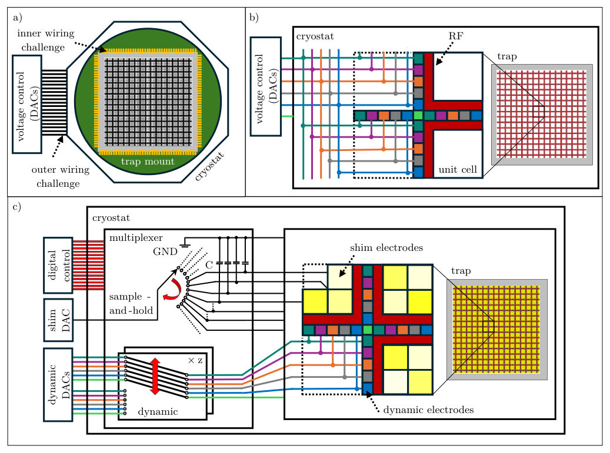
<figcaption class="paper-figure-caption"><b>Fig 1.</b> FIG. 1: Illustration of the architectural complexities of trapped-ion quantum computing systems. a) DACs are situated outside the cryostat and every electrode is connected to a single DAC. b) Electrode co-wiring: electrodes with same functionality in different unit cells are connected to the same DAC outside the cryostat. c) Integrated switching electronics: a multiplexing unit is placed between the DACs and the chip trap within the cryostat. The DACs and electrodes are categorized into two types: dynamic and compensation electrodes.</figcaption>
</figure>
<figure class="paper-figure-card">
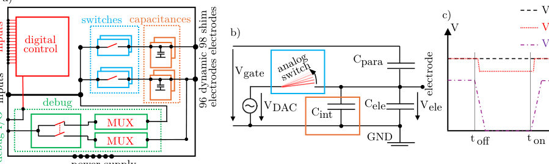
<figcaption class="paper-figure-caption"><b>Fig 2.</b> FIG. 2: a) High level block diagram of the multiplexer. Inputs of the multiplexer are the DACs, digital control and power supplies. The configuration of open and closed switches is controlled by the digital control. Capacities are integrated into the multiplexer. There are 96 outputs for dynamic electrodes and 98 outputs for shim electrodes. A dedicated function for debugging is able to multiplex any input voltage back to the outside of the cryostat. b) Simplified schematic of the switch and electrode circuit, highlighting the key components involved in the charge injection mechanism. c) Sketched diagram illustrating the timing of charge injection and its effect on the electrodes potential.</figcaption>
</figure>
<figure class="paper-figure-card">
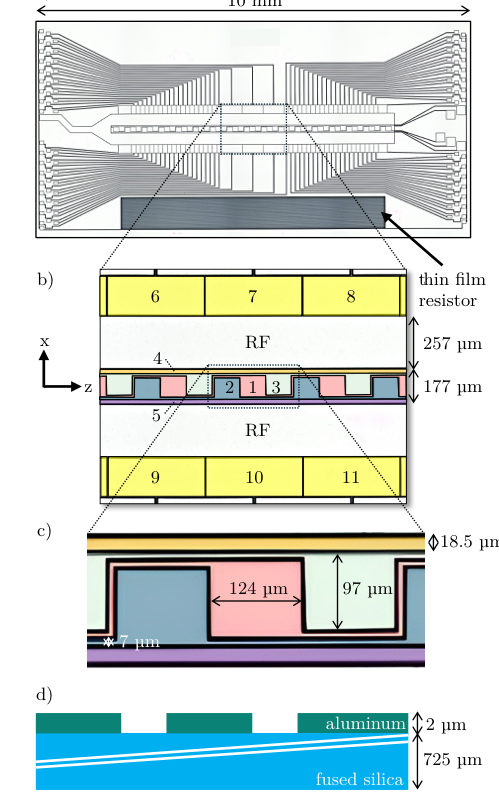
<figcaption class="paper-figure-caption"><b>Fig 3.</b> FIG. 3: Trap design. a) Stitched microscope image of the sur- face ion trap on a fused silica substrate, with chip dimensions of 10 mm × 5 mm. The bottom gray rectangle is a thin film re- sistor connected to the bond pads. Bond pads for connecting the electrodes and multiplexer via wire bonds are arranged in three columns on the left and right sides of the chip. b) Five DC electrodes, nested in between the RF rails. Three of these electrodes have a ’zig-zag’ shape to connect to the bond pads. Compensation electrodes, shown in yellow, are located outside the RF rails. c) Geometry of the zig-zag electrodes. d) Cross-section sketch of the ion trap, featuring a single elec- trode metal layer...</figcaption>
</figure>
<figure class="paper-figure-card">
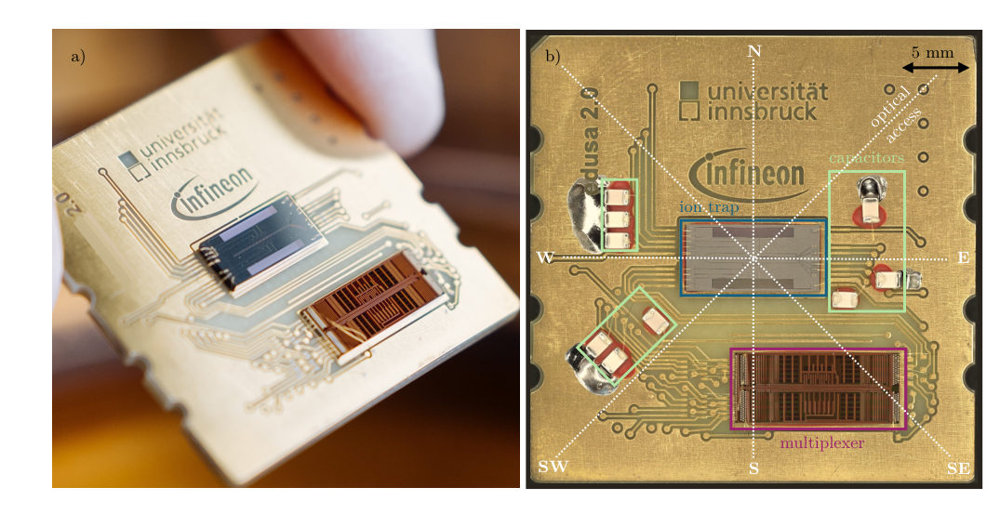
<figcaption class="paper-figure-caption"><b>Fig 4.</b> FIG. 4: Quantum processing units featuring a surface ion trap at their centers and a multiplexer located in the south of the PCBs. Panel a) shows the first version of the QPU, without any additional capacitors mounted. Panel b) shows the second-generation design, which incorporates 39 nF capacitors between the electrode lines and the PCB ground plane.</figcaption>
</figure>
<figure class="paper-figure-card">
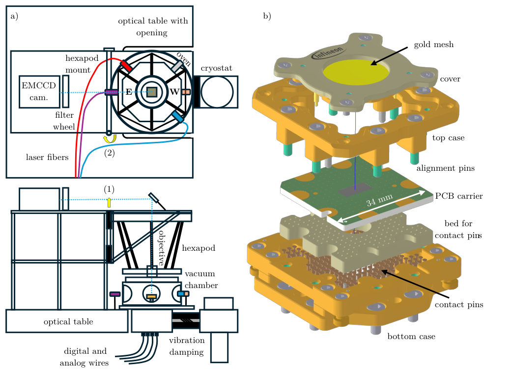
<figcaption class="paper-figure-caption"><b>Fig 5.</b> FIG. 5: Experimental setup and socket. a) Sketch of an optical table supporting a vacuum chamber, an EMCCD camera, a hexapod holding an optical objective. Yellow arrows indicate the movable range of the hexapod. b) Exploded view of the socket with a bottom case containing recessed beds for contact pins, which are inserted to provide electrical connections to a PCB carrier. The top case uses alignment pins for precise assembly, and a cover incorporates a gold mesh electrically connected via the PCB carrier.</figcaption>
</figure>
</div>

<p><strong>Summary.</strong> This paper demonstrates a scalable Quantum Processing Unit (QPU) for trapped ions by integrating the ion trap with a time-multiplexing control unit. By using an analog multiplexer, the authors overcome the massive wiring challenge associated with large-scale ion traps. The results confirm that this multiplexing approach maintains the high fidelity required for quantum computation.</p>
<p><strong>Why it may be interesting.</strong> The work directly addresses the engineering bottleneck of scaling trapped ion systems by proposing and experimentally validating a cryogenic, low-power multiplexing architecture for control electronics.</p>
<details>
<summary>Detailed structure</summary>
<p><strong>Main problem.</strong> Scaling trapped ion quantum processors to thousands of qubits faces severe wiring and control line density challenges.</p>
<p><strong>Main result.</strong> The demonstration shows that a time-multiplexing scheme using a surface ion trap and integrated analog multiplexers is compatible with high-fidelity quantum operations.</p>
<p><strong>Method.</strong> The authors built a Quantum Processing Unit (QPU) by integrating a surface ion trap with a cryostat-based analog multiplexer using a sample-and-hold technique.</p>
<p><strong>Model / system.</strong> The system is a trapped ion QPU fabricated on a surface ion trap, interfaced with an ASIC multiplexer. This setup allows routing multiple control voltages from few inputs, mitigating wiring bottlenecks.</p>
<p><strong>Key observables.</strong> Motional heating rates (measured in phonons/s), gate error decay rates, and secular frequencies.</p>
<p><strong>Important parameters / regimes.</strong> Multiplexing sampling intervals below 50 ms are sufficient for gate error fidelity; voltage decay rates are measured in V/min.</p>
<p><strong>Assumptions / limitations.</strong> The multiplexing scheme is assumed to maintain high fidelity despite charge injection and voltage decay during the sample-and-hold process.</p>
<p><strong>Figures summary.</strong> Figures illustrate the QPU architecture combining the trap and multiplexer, and show measurements of heating rates and voltage decay dynamics.</p>
<p><strong>Paper structure.</strong> The paper progresses from identifying the scaling challenge (wiring) to proposing and demonstrating the multiplexing solution, followed by detailed characterization of heating rates and charge injection effects.</p>
</details>
<details>
<summary>Abstract</summary>
<p>A fault-tolerant quantum computer is expected to require thousands of qubits. Trapped ion architectures provide a modular approach where the quantum register is divided into multiple subregisters connected by physically moving the corresponding ions. Transporting ions at scale comes with several challenges such as the need to connect thousands of control lines to an ion trap chip. Multiplexing the required control voltages from few input signals to multiple electrodes offers a solution to this wiring challenge. Here we demonstrate a quantum processing unit that combines a surface ion trap with a time multiplexer via a sample-and-hold technique that initially charges electrodes to fixed voltages and disconnects them during qubit operations. We characterize the unit's performance by measuring motional heating rates below one phonon per second in both open and closed switch configurations. We further characterize the sample and hold process and find that sampling intervals below 50 ms are sufficient to keep expected gate errors from decaying charges during the hold phase below $10^{-4}$. Our results indicate that the multiplexing scheme is compatible with high-fidelity operations.</p>
</details>
<p><sub><a href="#top">↑ back to top</a></sub></p>

<p><a id="paper-2605.16101"></a></p>
<h3 id="quantum-measurement-without-ontology"><a href="http://arxiv.org/abs/2605.16101v1">Quantum Measurement without Ontology</a></h3>
<p><strong>Authors:</strong> Richard Healey<br>
<strong>Type:</strong> theory · <strong>Category:</strong> other · <strong>PDF:</strong> <a href="https://arxiv.org/pdf/2605.16101v1">https://arxiv.org/pdf/2605.16101v1</a><br>
<strong>Analysis basis:</strong> full PDF text, analyzed in chunks
<strong>Topic relevance:</strong> 🔥 <code>quantum measurements</code> <strong>4/5</strong> · <code>measurement-induced transitions</code> <strong>1/5</strong></p>
<div class="figure-strip-hint">↔ Scroll figures horizontally</div>
<div class="paper-figures-scroll">
<figure class="paper-figure-card">
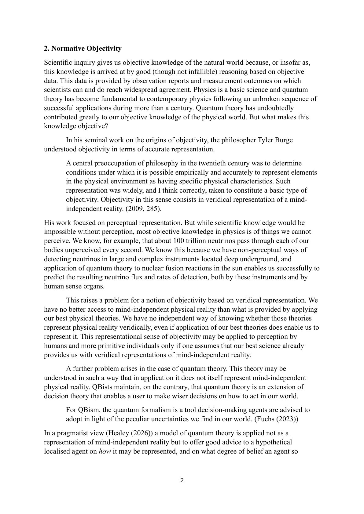
<figcaption class="paper-figure-caption"><b>Fig 1.</b> Low-resolution page preview, page 2</figcaption>
</figure>
<figure class="paper-figure-card">
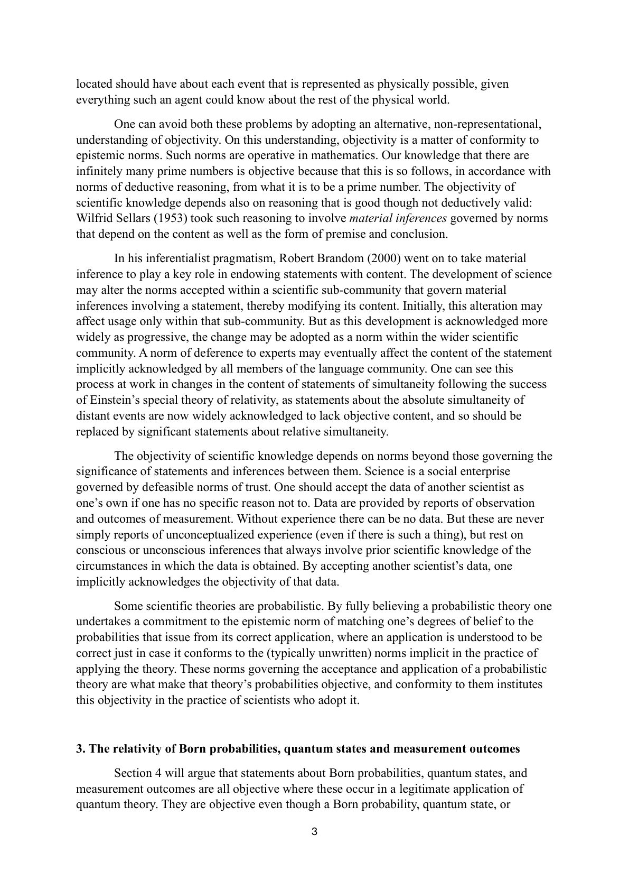
<figcaption class="paper-figure-caption"><b>Fig 2.</b> Low-resolution page preview, page 3</figcaption>
</figure>
<figure class="paper-figure-card">
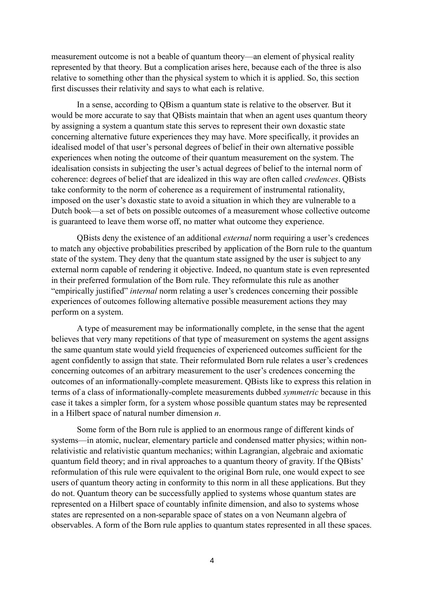
<figcaption class="paper-figure-caption"><b>Fig 3.</b> Low-resolution page preview, page 4</figcaption>
</figure>
<figure class="paper-figure-card">
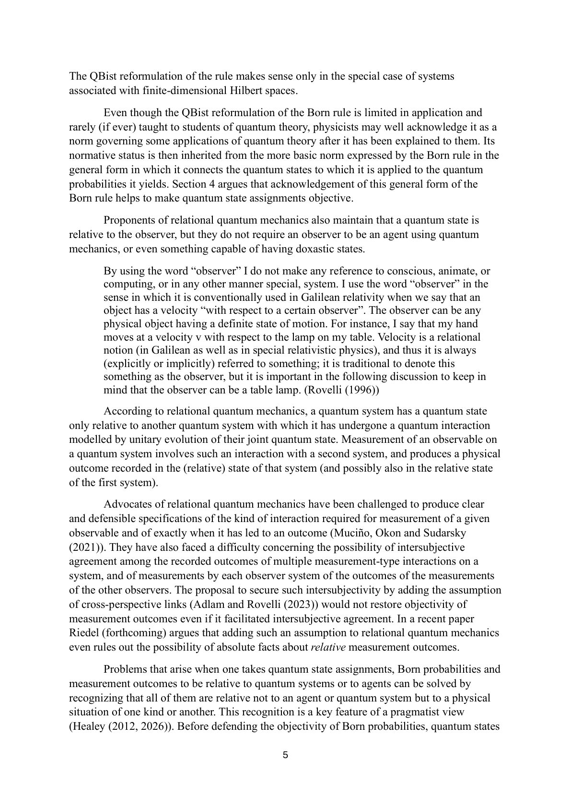
<figcaption class="paper-figure-caption"><b>Fig 4.</b> Low-resolution page preview, page 5</figcaption>
</figure>
<figure class="paper-figure-card">
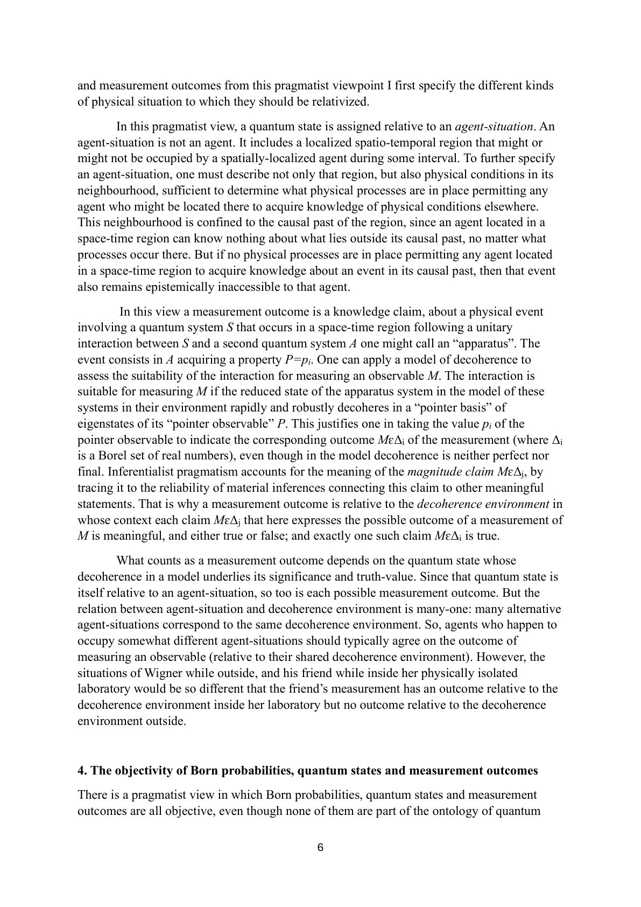
<figcaption class="paper-figure-caption"><b>Fig 5.</b> Low-resolution page preview, page 6</figcaption>
</figure>
</div>

<p><strong>Summary.</strong> This paper argues that quantum theory does not describe objective, mind-independent facts about physical reality regarding states or probabilities. Instead, the objectivity of quantum knowledge is established by the norms and practices of the scientific community when applying the theory to predict outcomes in specific physical situations. It shifts the focus from 'what is real' to 'how we are justified in making claims.'</p>
<p><strong>Why it may be interesting.</strong> It provides a deep philosophical underpinning to quantum measurement, which is crucial for understanding the interpretation of quantum field theories and open quantum systems where the environment plays a defining role.</p>
<details>
<summary>Detailed structure</summary>
<p><strong>Main problem.</strong> The paper tackles the fundamental philosophical problem of objectivity in quantum mechanics, specifically questioning whether quantum states, Born probabilities, and measurement outcomes represent objective facts about a mind-independent reality.</p>
<p><strong>Main result.</strong> The objectivity of quantum knowledge is argued to be instituted not by veridical representation of reality, but by conformity to epistemic norms and the successful application of quantum theory within specific 'agent-situations' or physical procedures.</p>
<p><strong>Method.</strong> The analysis employs philosophical tools, comparing ontological interpretations with pragmatic and coherence-based views (like QBism), and drawing analogies from relativistic physics and quantum metrology.</p>
<p><strong>Model / system.</strong> The discussion centers on abstract quantum systems, the mathematical formalism of quantum states, and the physical context of measurement, using examples like LIGO to ground the philosophical arguments.</p>
<p><strong>Key observables.</strong> Measurement outcomes, Born probabilities, quantum states, and the relative frequencies of detection events.</p>
<p><strong>Important parameters / regimes.</strong> The distinction between 'absoluteness' and 'objectivity'; the structure of the 'agent-situation' relative to decoherence environments.</p>
<p><strong>Assumptions / limitations.</strong> The core assumption is that standard physical practice requires an explanation for the objectivity of its results, leading to the rejection of strict ontological realism for quantum concepts.</p>
<p><strong>Paper structure.</strong> The paper progresses by first establishing the failure of classical notions of measurement objectivity in quantum theory, then contrasting various interpretations (QBism, RQM), and finally arguing that objectivity arises from normative constraints and successful application in physical procedures like metrology.</p>
</details>
<details>
<summary>Abstract</summary>
<p>Measurement is an important scientific activity. In most of science, including classical physics, is may be understood as a way of finding out about the physical world and representing the results numerically. No-go theorems show that measurement of quantum observables is not like that: the recorded outcome is typically created rather than revealed in a quantum measurement, in which case there is no objective fact about the observable's prior value. Other no-go theorems show that unitary quantum theory can generally neither explain nor even represent a unique recorded outcome, thereby threatening that outcome's objectivity. Methodological norms inherent in quantum physical practice nevertheless institute the objectivity, not only of unique recorded outcomes of quantum measurements, but also of non-quantum features of the world that physicists and other scientists take their models to represent.</p>
</details>
<p><sub><a href="#top">↑ back to top</a></sub></p>

<p><a id="paper-2605.15521"></a></p>
<h3 id="entropy-production-from-spin-vibrational-coupling-in-endohedral-fullerene-qubits-encapsulated-in-suspended-carbon-nanotubes"><a href="http://arxiv.org/abs/2605.15521v1">Entropy Production from Spin--Vibrational Coupling in Endohedral-Fullerene Qubits Encapsulated in Suspended Carbon Nanotubes</a></h3>
<p><strong>Authors:</strong> Cristian Staii<br>
<strong>Type:</strong> theory · <strong>Category:</strong> statistical mechanics · <strong>PDF:</strong> <a href="https://arxiv.org/pdf/2605.15521v1">https://arxiv.org/pdf/2605.15521v1</a><br>
<strong>Analysis basis:</strong> full PDF text, analyzed in chunks
<strong>Topic relevance:</strong> <code>correlated / nonlocal dissipation</code> <strong>3/5</strong> · <code>driven-dissipative phase transition</code> <strong>3/5</strong> · <code>entanglement &amp; information structure</code> <strong>3/5</strong> · <code>methods for driven-dissipative</code> <strong>3/5</strong> · <code>non-equilibrium dynamics</code> <strong>3/5</strong> · <code>non-equilibrium universality</code> <strong>3/5</strong> · <code>spintronics-quantum-optics interface</code> <strong>3/5</strong> · <code>Keldysh / 2PI / non-Gaussian methods</code> <strong>2/5</strong> · <code>exotic spin models in light-matter</code> <strong>2/5</strong> · <code>analog quantum simulation</code> <strong>1/5</strong></p>
<div class="figure-strip-hint">↔ Scroll figures horizontally</div>
<div class="paper-figures-scroll">
<figure class="paper-figure-card">
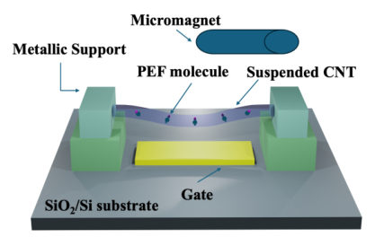
<figcaption class="paper-figure-caption"><b>Fig 1.</b> FIG. 1. Schematic of the proposed experimental setup showing single spins trapped inside a suspended carbon nanotube (CNT). The spins are associated with paramagnetic endohedral fullerene (PEF) molecules confined within the CNT. The vibrational motion of the nanotube is controlled by gate voltages, while a micromagnet placed nearby generates an external magnetic field. Spin-orbit cou- pling in the CNT gives rise to strong coupling between the spin degree of freedom and the quantized mechanical motion of the nanotube, thereby enabling manipulation of the PEF spin splitting.</figcaption>
</figure>
<figure class="paper-figure-card">
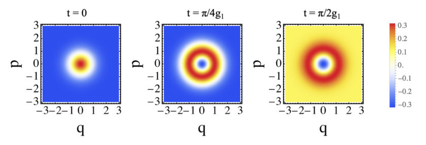
<figcaption class="paper-figure-caption"><b>Fig 2.</b> FIG. 2. Reduced mechanical Wigner function Wm(q, p, t) in the resonant weak-drive regime, evaluated from Eq. (45) at three representative times. At t = 0, the oscillator is in the vacuum state and the Wigner function is purely Gaussian. At intermediate times t = π/(4g1), the phase-space distribution is a mixture of the vacuum and one-phonon contributions. At t = π/(2g1), the oscillator is in the one-phonon state, and the Wigner function displays the characteristic nonclassical structure associated with a single vibrational excitation. This evolution provides a direct visualization of the coherent transfer of a single excitation from the spin sector to the CNT mode. The color bar indicates...</figcaption>
</figure>
<figure class="paper-figure-card">
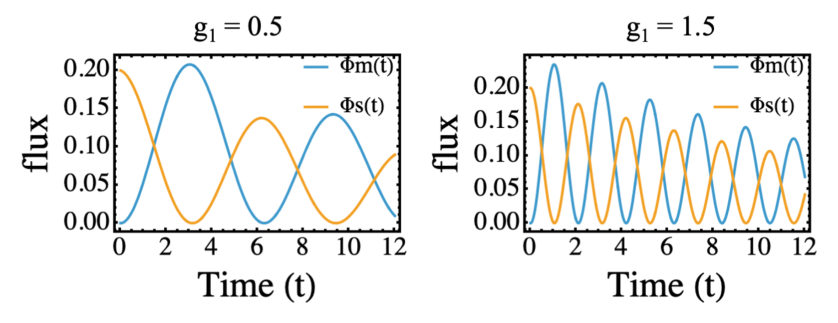
<figcaption class="paper-figure-caption"><b>Fig 3.</b> FIG. 3. Entropy-flux dynamics in the resonant weak-drive regime for two representative values of the spin–phonon coupling g1. The mechanical entropy flux Φm(t) and spin entropy flux Φs(t) are plotted using the weak-excitation expressions derived in the text. As g1 increases, coherent spin–phonon exchange occurs on a shorter timescale, leading to a faster buildup of entropy flow through the mechanical channel and a corresponding redistribution of dissipation away from direct spin relaxation and toward the vibrational mode.</figcaption>
</figure>
<figure class="paper-figure-card">
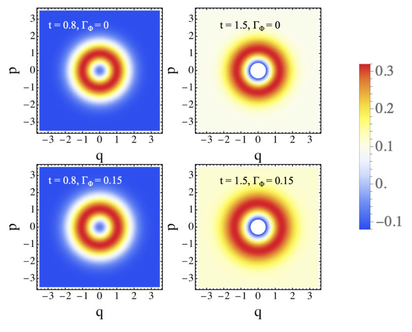
<figcaption class="paper-figure-caption"><b>Fig 4.</b> FIG. 4. Diffusion-broadened reduced mechanical Wigner function Wm(q, p, t) at representative times and dephasing rates in the resonant weak-drive regime. The four panels show the phase-space distribution for two times, t = π/(4g1) and t = π/(2g1), and for two values of the dephasing rate, Γϕ = 0 and Γϕ = 0.15. As dephasing increases, the nonclassical one-phonon structure is progressively smoothed and the distribution broadens in phase space, illustrating the combined effects of mechanical diffusion and spin decoherence. The color bar indicates the magnitude of Wm(q, p, t).</figcaption>
</figure>
<figure class="paper-figure-card">
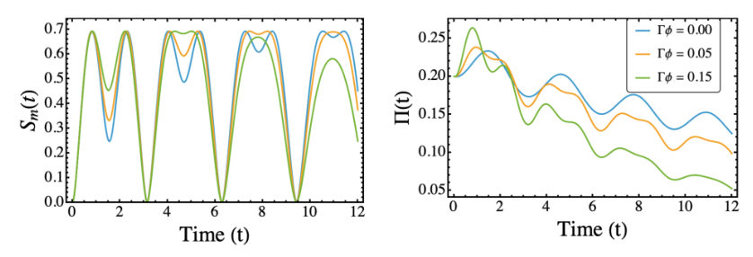
<figcaption class="paper-figure-caption"><b>Fig 5.</b> FIG. 5. Left panel: reduced mechanical entropy Sm(t) for three representative dephasing rates Γϕ in the resonant weak-drive regime. Increasing dephasing progressively damps the oscillatory behavior associated with coherent spin–phonon exchange. Right panel: corresponding irreversible contribution Π(t) obtained from the phenomenological weak-excitation model. As Γϕ increases, the entropy balance acquires a more pronounced strictly positive irreversible component arising from the combined effects of mechanical dissipation and spin decoherence. The legend shown in the inset of the right panel applies to both figures.</figcaption>
</figure>
</div>

<p><strong>Summary.</strong> This theoretical study models the interaction between molecular spin qubits (PEFs) and the quantized vibrations of suspended CNTs. By developing a hybrid open-system model, the authors derive an entropy balance equation to quantify how irreversibility is generated and distributed between the spin and mechanical baths. The results establish CNT-PEF hybrids as powerful platforms for studying non-equilibrium quantum thermodynamics.</p>
<p><strong>Why it may be interesting.</strong> This work is highly relevant as it provides a detailed, quantitative framework for diagnosing non-equilibrium quantum processes (like decoherence and information loss) using thermodynamic quantities (entropy) in solid-state quantum devices.</p>
<details>
<summary>Detailed structure</summary>
<p><strong>Main problem.</strong> The paper analyzes entropy generation and irreversibility in a hybrid quantum system coupling spin and mechanical (vibrational) degrees of freedom.</p>
<p><strong>Main result.</strong> It demonstrates that the system exhibits crossovers between oscillator-dominated and spin-dominated entropy-production regimes, providing a quantitative basis for studying non-equilibrium quantum thermodynamics.</p>
<p><strong>Method.</strong> The analysis employs a hybrid open-system model, using the Wigner function formalism for the mechanical mode and deriving an entropy balance equation from the Lindblad master equation.</p>
<p><strong>Model / system.</strong> The system consists of paramagnetic endohedral fullerenes (PEFs) acting as qubits, coupled to the flexural modes of a suspended Carbon Nanotube (CNT) resonator. The dynamics are governed by a Lindblad master equation incorporating spin relaxation, mechanical damping, and the spin-vibrational interaction.</p>
<p><strong>Key observables.</strong> Entropy production ($\Pi(t)$), entropy flux ($\Phi(t)$), mechanical Wigner function $W(q, p, t)$, and mutual information $I_{s:m}(t)$.</p>
<p><strong>Important parameters / regimes.</strong> Coupling strength ($g_1$), mechanical damping ($\gamma_m$), spin relaxation rates ($\Gamma$), and external driving strength ($\epsilon$).</p>
<p><strong>Assumptions / limitations.</strong> The analysis relies on projecting the spin manifold to two states and treating the mechanical mode using a Gaussian propagator, which assumes linear damping and quadratic Hamiltonians.</p>
<p><strong>Figures summary.</strong> Figures illustrate the time evolution of the reduced mechanical Wigner function, showing oscillations between vacuum and one-phonon profiles, and plot the time evolution of mechanical and spin entropy fluxes.</p>
<p><strong>Paper structure.</strong> The paper builds from deriving the effective Jaynes-Cummings Hamiltonian, to applying the Wigner function formalism for the mechanical mode, and finally deriving the entropy balance equation to quantify entropy production and flux in various coupling regimes.</p>
</details>
<details>
<summary>Abstract</summary>
<p>Hybrid carbon nanotube-fullerene architectures provide a controllable platform for studying irreversibility and information flow in structured quantum environments. We analyze entropy generation in a system where paramagnetic endohedral fullerenes, such as N@C$_{60}$ and P@C$_{60}$, are encapsulated inside a suspended carbon nanotube (CNT) resonator, with selected multi-level fullerene spin states forming an effective qubit coupled to quantized CNT flexural modes. Building on prior work on fullerene-filled CNTs, spin-phonon control in suspended nanotubes, and phase-space propagators for damped driven oscillators, we develop a hybrid open-system model combining driven quantum Brownian motion of the CNT with an effective Jaynes-Cummings spin-vibrational interaction. The resonator dynamics are represented by a Wigner function whose evolution is written analytically in terms of the initial Wigner distribution and a Gaussian propagator. This phase-space description separates drive-induced displacement, diffusion, and damping, and connects these processes directly to entropy flow. The coupled spin-mechanical dynamics are embedded in a Lindblad master equation including mechanical damping, spin relaxation, pure dephasing, and thermally activated excitation. Within this framework we derive the entropy balance, identify entropy flux and non-negative entropy production, and examine how spin-vibrational hybridization redistributes irreversibility between coherent exchange and dissipative channels. We show that magnetic-gradient-enhanced spin-phonon coupling, resonant driving, and moderate thermal occupation produce crossovers between oscillator-dominated and spin-dominated entropy-production regimes. The framework provides a basis for using CNT-PEF hybrids as nanoscale platforms to study nonequilibrium quantum thermodynamics, decoherence, and information loss in vibrational environments.</p>
</details>
<p><sub><a href="#top">↑ back to top</a></sub></p>

<p><a id="paper-2605.16247"></a></p>
<h3 id="brownian-motion-non-equilibrium-states-from-equilibrium-trajectories-recovering-hydrodynamic-regimes-from-prepared-displacement-measurements"><a href="http://arxiv.org/abs/2605.16247v1">Brownian motion: non-equilibrium states from equilibrium trajectories -- recovering hydrodynamic regimes from prepared displacement measurements</a></h3>
<p><strong>Authors:</strong> Jason Boynewicz, Michael C. Thumann, Giuseppe Procopio, Massimiliano Giona<br>
<strong>Type:</strong> theory · <strong>Category:</strong> statistical mechanics · <strong>PDF:</strong> <a href="https://arxiv.org/pdf/2605.16247v1">https://arxiv.org/pdf/2605.16247v1</a><br>
<strong>Analysis basis:</strong> full PDF text, analyzed in chunks
<strong>Topic relevance:</strong> <code>Keldysh / 2PI / non-Gaussian methods</code> <strong>3/5</strong> · <code>methods for driven-dissipative</code> <strong>3/5</strong> · <code>non-equilibrium dynamics</code> <strong>3/5</strong> · <code>non-equilibrium universality</code> <strong>3/5</strong> · <code>quantum measurements</code> <strong>3/5</strong> · <code>correlated / nonlocal dissipation</code> <strong>2/5</strong> · <code>driven-dissipative phase transition</code> <strong>2/5</strong> · <code>measurement-induced transitions</code> <strong>1/5</strong></p>
<div class="figure-strip-hint">↔ Scroll figures horizontally</div>
<div class="paper-figures-scroll">
<figure class="paper-figure-card">
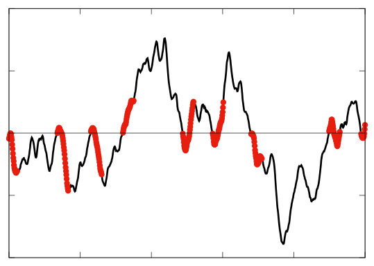
<figcaption class="paper-figure-caption"><b>Fig 1.</b> FIG. 1. Schematic representation of the subsampling procedure of an equilibrium trajectory to</figcaption>
</figure>
<figure class="paper-figure-card">
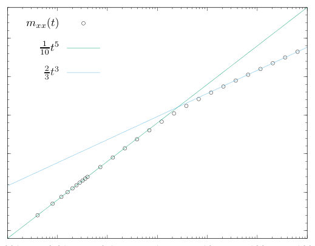
<figcaption class="paper-figure-caption"><b>Fig 2.</b> FIG. 2. mxx(t) = ⟨x2(t)|v(0) = 0, R(0) = 0⟩vs t expressed by eq. (35) for zero velocity and zero</figcaption>
</figure>
<figure class="paper-figure-card">
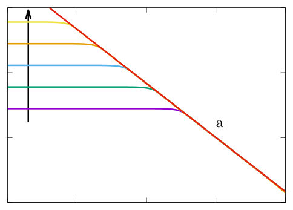
<figcaption class="paper-figure-caption"><b>Fig 3.</b> FIG. 3. g(t, Γ, Ni) vs t. The arrow indicates increasing values of Γ = 103, 106, 109, 1011. Ni = 20</figcaption>
</figure>
<figure class="paper-figure-card">
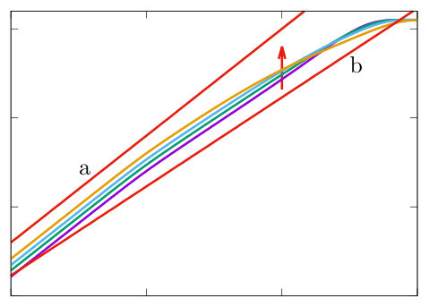
<figcaption class="paper-figure-caption"><b>Fig 4.</b> FIG. 4. mxx(t) vs t for the Stokes-inertial model, eq. (40), with κs = 0.1, and Γ = 107 for different</figcaption>
</figure>
<figure class="paper-figure-card">
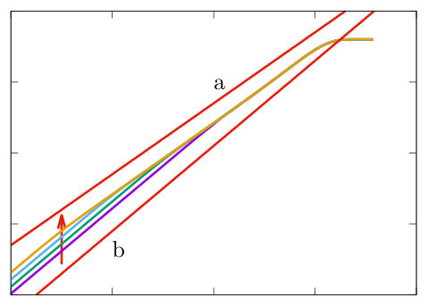
<figcaption class="paper-figure-caption"><b>Fig 5.</b> FIG. 5. mxx(t) vs t for the Stokes-inertial model, eq. (40), with κs = 0.1, b = 0.1, for different</figcaption>
</figure>
</div>

<p><strong>Summary.</strong> This work develops a theoretical framework to extract microscopic fluid-particle interaction details from single Brownian trajectories by treating equilibrium states as superpositions of non-equilibrium paths. It analyzes the short-time scaling of the mean-squared displacement, predicting crossovers between $t^{5/2}$ and $t^4$ scaling depending on the inclusion of correlated stochastic forces. This provides a powerful method to test hydrodynamic models using single-trajectory measurements.</p>
<p><strong>Why it may be interesting.</strong> The rigorous connection between non-equilibrium path measurements and equilibrium hydrodynamic properties is a powerful theoretical tool for characterizing complex many-body dynamics, relevant for understanding dissipation in open quantum systems.</p>
<details>
<summary>Detailed structure</summary>
<p><strong>Main problem.</strong> The paper aims to unravel fine details of fluid-particle interactions at microscopic scales by analyzing non-equilibrium states derived from single Brownian trajectories, connecting them to macroscopic hydrodynamics.</p>
<p><strong>Main result.</strong> The analysis confirms the $t^{5/2}$-law for short-time displacement statistics due to fluid inertial effects but predicts a crossover to a $t^4$-scaling at very short times when correlated stochastic forcings are properly accounted for.</p>
<p><strong>Method.</strong> The approach utilizes the Chapman-Kolmogorov equation, viewing equilibrium trajectories as superpositions of non-equilibrium states, and analyzing the second-order moments of particle position via Generalized Langevin Equations (GLEs).</p>
<p><strong>Model / system.</strong> The system is a Brownian particle moving in a solvent fluid, modeled using concepts from Markovian dynamics, path integrals, and memory kernels derived from hydrodynamic theory.</p>
<p><strong>Key observables.</strong> Mean square displacement $\langle x^2(t) 
angle$, velocity autocorrelation function, and scaling exponents ($\phi, \zeta, d_v$).</p>
<p><strong>Important parameters / regimes.</strong> Short time $t$, fluid viscosity ($\eta$), and parameters related to fluid inertia and correlation time.</p>
<p><strong>Assumptions / limitations.</strong> The analysis relies on the Markovian embedding for non-Markovian processes and involves approximations in the Laplace domain for short-time limits.</p>
<p><strong>Figures summary.</strong> Figures illustrate the mean-squared displacement $m_{xx}(t)$ vs $t$ for various models, showing crossovers between $t^3$, $t^{5/2}$, and $t^4$ scaling regimes depending on the physical assumptions.</p>
<p><strong>Paper structure.</strong> The paper builds theory by relating equilibrium paths to non-equilibrium states, develops the mathematical framework using GLEs and memory kernels, and concludes by deriving and comparing the short-time scaling laws for $\langle x^2(t) 
angle$ under different hydrodynamic assumptions.</p>
</details>
<details>
<summary>Abstract</summary>
<p>Owing to the Chapman-Kolmogorov equation for Markovian dynamics,any equilibrium trajectory of a Brownian particle in a solvent fluid can be viewed as the superposition of an uncountable number of non-equilibrium states. This property permits the unraveling of fine details of fluid-particle interactions at microscales defined by its non-equilibrium properties from the analysis of a single Brownian trajectory and to connect them to the hydrodynamics of the solvent fluid, simply considering the lower-order (second) moments of particle position in trapped conditions. In this way, the acceleration due to thermal-hydrodynamic fluctuational forces is isolated from the other factors and the short-time displacement statistics is completely determined by the correlation properties of the fluctuational thermal-hydrodynamic force. This approach not only confirms the $t^{5/2}$-law obtained by Boynewicz et al. (2026), related to fluid inertial effects, but indicates that this scaling may be superseded by a $t^4$-scaling at very short times once the correlated nature of the stochastic forcings is taken into account. The latter result is related to the regularity properties of particle velocity realizations.</p>
</details>
<p><sub><a href="#top">↑ back to top</a></sub></p>

<p><a id="paper-2605.15426"></a></p>
<h3 id="entanglement-dynamics-of-separable-squeezed-states-in-finite-memory-structured-reservoir"><a href="http://arxiv.org/abs/2605.15426v1">Entanglement Dynamics of Separable Squeezed States in Finite Memory Structured Reservoir</a></h3>
<p><strong>Authors:</strong> Austen Couvertier, Ting Yu<br>
<strong>Type:</strong> theory · <strong>Category:</strong> other · <strong>PDF:</strong> <a href="https://arxiv.org/pdf/2605.15426v1">https://arxiv.org/pdf/2605.15426v1</a><br>
<strong>Analysis basis:</strong> full PDF text, analyzed in chunks
<strong>Topic relevance:</strong> <code>correlated / nonlocal dissipation</code> <strong>3/5</strong> · <code>entanglement &amp; information structure</code> <strong>3/5</strong> · <code>methods for driven-dissipative</code> <strong>3/5</strong> · <code>analog quantum simulation</code> <strong>2/5</strong> · <code>driven-dissipative phase transition</code> <strong>2/5</strong> · <code>non-equilibrium dynamics</code> <strong>2/5</strong> · <code>non-equilibrium universality</code> <strong>2/5</strong> · <code>Keldysh / 2PI / non-Gaussian methods</code> <strong>1/5</strong> · <code>Tavis-Cummings &amp; cavity-many-emitter</code> <strong>1/5</strong> · <code>correlated cavity matter</code> <strong>1/5</strong></p>
<div class="figure-strip-hint">↔ Scroll figures horizontally</div>
<div class="paper-figures-scroll">
<figure class="paper-figure-card">
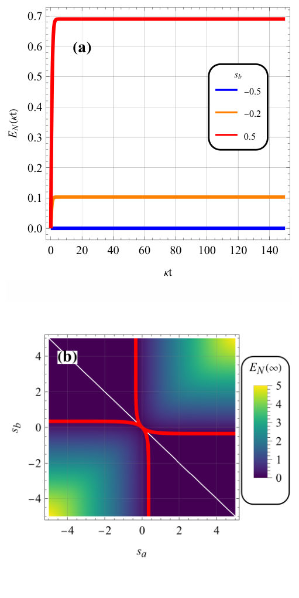
<figcaption class="paper-figure-caption"><b>Fig 1.</b> FIG. 1: (a) Time evolution of the logarithmic negativity EN [Eq. 8] in a Markovian bath with mode A fixed at sa = +1 and mode B initialized at sb = −0.5 (blue), sb = −0.2 (orange), and sb = +0.5 (red). (b) Steady-state EN as a function of (sa, sb) over [−5, 5], with bright regions bounded by Simon criteria [Eqs. A13-A14].</figcaption>
</figure>
<figure class="paper-figure-card">
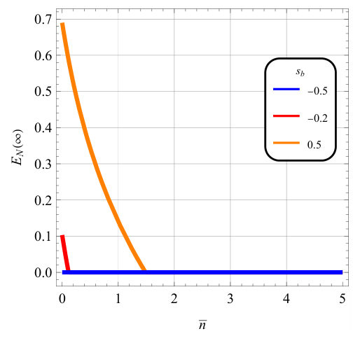
<figcaption class="paper-figure-caption"><b>Fig 2.</b> FIG. 2: Steady-state logarithmic negativity EN [Eq. 8] versus thermal occupation ¯n in a Markovian bath. Results are shown for aligned (sa = sb = +0.5, orange), weakly orthogonal (sa = +0.5, sb = −0.2, red), and strongly orthogonal (sa = +0.5, sb = −0.5, blue) inputs. Aligned inputs retain finite entanglement up to ¯n≈1.5, weakly orthogonal inputs separate for ¯n ≈0.2, and strongly orthogonal inputs remain separable for all ¯n.</figcaption>
</figure>
<figure class="paper-figure-card">
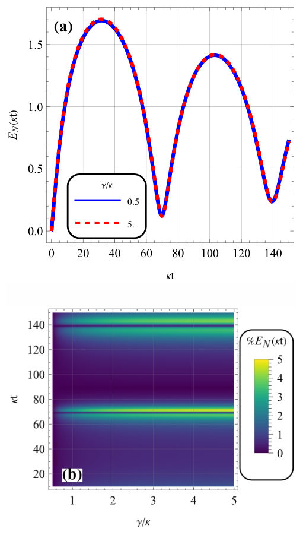
<figcaption class="paper-figure-caption"><b>Fig 3.</b> FIG. 3: (a) Time evolution of the logarithmic negativity EN [Eq. 8] in an Ornstein–Uhlenbeck bath for γ/κ = 0.5 (blue) and γ/κ = 5 (red) at fixed detuning δ∗ AE. Trajectories overlap within a few percent. (b) Relative deviation %EN = |∆EN/Ebaseline N | × 100% versus γ, referenced to the γ/κ = 0.5 curve. Deviations remain below 5%, concentrated near oscillation minima.</figcaption>
</figure>
<figure class="paper-figure-card">
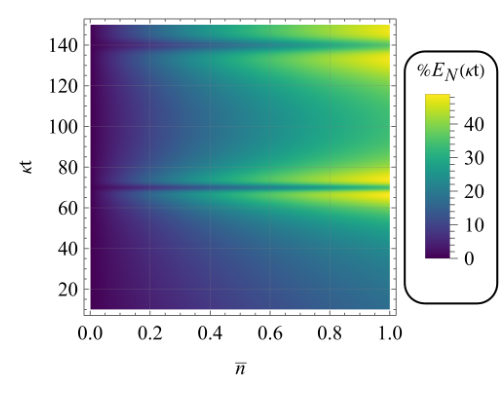
<figcaption class="paper-figure-caption"><b>Fig 4.</b> FIG. 4: Relative deviation %EN = |∆EN/Ebaseline N | × 100% of freezing dynamics versus thermal occupation ¯n. Deviations are bounded by ≤5% in the cryogenic regime (¯n ≤0.05) and ≤20% at moderate occupancies (¯n ≤0.2). Larger excursions occur only at short-time transients and late-time decay.</figcaption>
</figure>
<figure class="paper-figure-card">
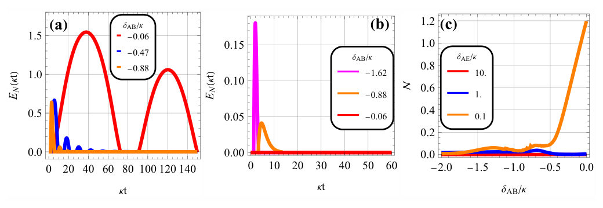
<figcaption class="paper-figure-caption"><b>Fig 5.</b> FIG. 5: (a) Time evolution of logarithmic negativity EN [Eq. 8] for orthogonal inputs (sa = +1, sb = −1) in structured baths with different detuning pairs (δAB, δAE)/κ, showing entanglement birth, death, and revival. (b) Markovian comparison, where no choice of δAE yields revivals and correlations decay rapidly. (c) Non-Markovianity measure N [Eq. 11] versus δAB/κ for the same conditions; in the large-δAE/κ regime the witness remains zero despite nontrivial EN(t).</figcaption>
</figure>
</div>

<p><strong>Summary.</strong> This paper analyzes entanglement dynamics in bosonic systems coupled to structured, memory-retaining reservoirs. By employing advanced Gaussian methods, the authors reveal three unique non-Markovian phenomena—including entanglement revival and integer-locked beating—that are impossible in simple Markovian baths. These findings establish structured reservoirs as controllable resources for continuous-variable quantum technologies.</p>
<p><strong>Why it may be interesting.</strong> This work provides concrete, analytically derived mechanisms (like integer-locking and freezing laws) showing how structured environments can act as tunable resources for generating and controlling quantum entanglement, which is highly relevant for quantum optics and cavity QED.</p>
<details>
<summary>Detailed structure</summary>
<p><strong>Main problem.</strong> The study investigates how entanglement dynamics evolve in continuous-variable Gaussian systems when coupled to structured, finite-memory quantum reservoirs, addressing gaps left by Markovian or pre-entangled state assumptions.</p>
<p><strong>Main result.</strong> The authors identify three non-Markovian mechanisms—detuning-induced freezing, entanglement revival from separable inputs, and integer-locked beating—that are absent in Markovian dynamics.</p>
<p><strong>Method.</strong> The analysis employs Gaussian covariance methods, evolving the system dynamics using approximate Non-Markovian Quantum State Diffusion (QSD) and utilizing Bures distance diagnostics to quantify non-Markovianity.</p>
<p><strong>Model / system.</strong> The model consists of two bosonic modes coupled to a common bosonic reservoir, whose memory effects are modeled using an Ornstein–Uhlenbeck kernel. The analysis is extended to finite temperatures via pseudomode embeddings.</p>
<p><strong>Key observables.</strong> Logarithmic negativity ($E_N$), Bures distance ($D_B$), and the non-Markovianity witness ($N$).</p>
<p><strong>Important parameters / regimes.</strong> Detuning ($\delta_{AB}, \delta_{AE}$), reservoir correlation time ($\gamma$), thermal occupation ($ar{n}$), and modulation amplitude ($\delta_0/\kappa$).</p>
<p><strong>Assumptions / limitations.</strong> The analysis relies on approximate QSD and pseudomode embeddings, though these methods successfully map the dynamics to maintain complete positivity.</p>
<p><strong>Figures summary.</strong> Figures illustrate the persistence of entanglement revivals and beating envelopes under structured coupling, and show the relative deviation of entanglement metrics across varying thermal occupations.</p>
<p><strong>Paper structure.</strong> The paper builds from establishing the system Hamiltonian and initial states, developing the non-Markovian evolution equations (using QSD/pseudomodes), and then systematically analyzing the three key non-Markovian phenomena (freezing, revival, beating) under varying temperature and detuning conditions.</p>
</details>
<details>
<summary>Abstract</summary>
<p>Entanglement in continuous-variable Gaussian systems is a key resource, and common reservoirs can both suppress and generate correlations. Existing work focused on pre-entangled states or Markovian baths, leaving open whether separable squeezed inputs entangle in structured environments or under modulation. We study two bosonic modes coupled to a common reservoir, each initialized in a separable squeezed vacuum. Dynamics are analyzed utilizing Gaussian covariance methods, evolved under approximate Non-Markovian quantum state diffusion (QSD), finite-temperature pseudomode embeddings, and Bures-based non-Markovian diagnostics. We identify three mechanisms absent in Markovian dynamics: (1) A detuning condition that freezes entanglement trajectories across reservoir correlation times; (2) birth, death, and revival of entanglement from orthogonal inputs; and (3) integer-locked beating with square-wave oscillations produced by periodic detuning. All mechanisms persist at finite temperature, with deviations bounded within 5% in cryogenic regimes and 20% at moderate occupations. These deviation bounds align with cryogenic cavity, phononic, and optomechanical platforms, where structured spectral densities and detuning modulation are already accessible. Structured reservoirs are shown to emerge as tunable entanglement resources for continuous-variable quantum technologies.</p>
</details>
<p><sub><a href="#top">↑ back to top</a></sub></p>

<p><a id="paper-2605.15903"></a></p>
<h3 id="active-model-bmath235math-from-mass-conserving-reaction-diffusion-systems"><a href="http://arxiv.org/abs/2605.15903v1">Active Model B$^-$ from Mass-Conserving Reaction-Diffusion Systems</a></h3>
<p><strong>Authors:</strong> Davide Toffenetti, Beatrice Nettuno, Henrik Weyer, Erwin Frey<br>
<strong>Type:</strong> theory · <strong>Category:</strong> statistical mechanics · <strong>PDF:</strong> <a href="https://arxiv.org/pdf/2605.15903v1">https://arxiv.org/pdf/2605.15903v1</a><br>
<strong>Analysis basis:</strong> full PDF text, analyzed in chunks
<strong>Topic relevance:</strong> <code>Keldysh / 2PI / non-Gaussian methods</code> <strong>3/5</strong> · <code>driven-dissipative phase transition</code> <strong>3/5</strong> · <code>non-equilibrium dynamics</code> <strong>3/5</strong> · <code>non-equilibrium universality</code> <strong>3/5</strong> · <code>analog quantum simulation</code> <strong>2/5</strong> · <code>methods for driven-dissipative</code> <strong>2/5</strong> · <code>Frenkel-Kontorova</code> <strong>1/5</strong> · <code>correlated / nonlocal dissipation</code> <strong>1/5</strong></p>
<div class="figure-strip-hint">↔ Scroll figures horizontally</div>
<div class="paper-figures-scroll">
<figure class="paper-figure-card">
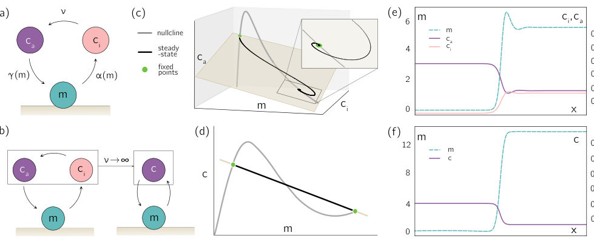
<figcaption class="paper-figure-caption"><b>Fig 1.</b> Figure 1. (a) Reaction scheme of the three-component model [Eq. (1)]: the membrane-bound species m detaches at rate α(m) into the inactive cytosolic state ci, which reactivates at rate ν into the active state ca, and ca recruits back to the membrane at rate γ(m). (b) Limiting two-component mass-conserving model, obtained in the limit ν →∞, in which ci and ca collapse onto a single lumped cytosolic species c. (c) Phase-space construction for the three-component model: the reactive nullcline (gray curve) defines the local reactive equilibria, and the steady-state interface trajectory (black) is constrained to a plane of constant η (beige, light gray); the inset zooms in on the homogeneous...</figcaption>
</figure>
<figure class="paper-figure-card">
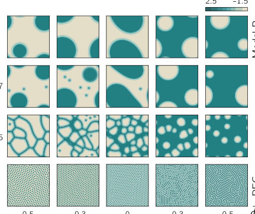
<figcaption class="paper-figure-caption"><b>Fig 2.</b> Figure 2. Phase diagram of phenomenological AMB−, obtained from finite-element simulations [34] in the (¯ϕ, κ1) plane. Increasing κ1 at fixed mean density traverses a se- quence of morphologies from the PFC limit (κ1 ≲0, periodic patterns) to the Model B limit (κ1 ≳1, macrophase separa- tion), passing through coexistence of large and small droplets, microphase-separated droplets, and stripes/foams in the in- termediate regime. Colors encode local density ϕ (teal, dark gray; beige, light gray). Parameters: κ(ϕ) = tanh(κ1 −ϕ), M = 1, χ = 0.055ϕ, η∗(ϕ) = −ϕ + ϕ3, λ = 0.</figcaption>
</figure>
<figure class="paper-figure-card">
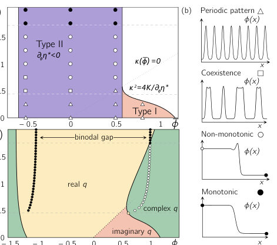
<figcaption class="paper-figure-caption"><b>Fig 3.</b> Figure 3. (a) Linear stability of the homogeneous state in the (¯ϕ, κ1) plane (parameters as in Fig. 2): Type II (laven- der, dark gray) and Type I (coral, medium gray) instabili- ties; stable elsewhere (white). Symbols in 1D simulations: triangles (periodic), squares (multi-wavelength), filled/open circles (monotonic/non-monotonic interfaces). (b) Represen- tative steady-state profiles, one per symbol class. (c) Spatial- eigenvalue analysis of plateau solutions ϕ±, classified by the decay rate q: real (cream, light gray, monotonic tail), com- plex (mint, dark gray, non-monotonic tail), imaginary (coral, medium gray, plateau unstable). Solid: κ2 = 4K ∂ϕη∗; dot- ted: κ(ϕ) = 0. Circles:...</figcaption>
</figure>
</div>

<p><strong>Summary.</strong> This work derives Active Model B− (AMB−), an effective scalar field theory, by analyzing the late-time dynamics of a complex three-component mass-conserving reaction-diffusion system. The key finding is that AMB− exhibits a density-dependent interfacial coefficient that drives a finite-wavelength instability, stabilizing microphase separation. The methodology involves advanced field-theoretic reductions, providing a powerful framework for understanding pattern selection in non-equilibrium matter.</p>
<p><strong>Why it may be interesting.</strong> While focused on classical pattern formation, the mathematical techniques used—deriving an effective, non-linear, gradient-based field theory from underlying conservation laws—are highly relevant to modeling non-equilibrium dynamics in quantum many-body systems or open quantum systems.</p>
<details>
<summary>Detailed structure</summary>
<p><strong>Main problem.</strong> The paper addresses the theoretical challenge of understanding pattern formation in mass-conserving reaction-diffusion systems, specifically aiming to derive an effective active scalar field theory that captures finite-wavelength pattern selection.</p>
<p><strong>Main result.</strong> The late-time dynamics reduce to Active Model B− (AMB−), a scalar active field theory characterized by a density-dependent interfacial coefficient $\kappa(\phi)$ that turns negative at high density, stabilizing microphase-separated patterns.</p>
<p><strong>Method.</strong> The derivation uses adiabatic elimination and gradient expansion techniques to reduce a complex three-component mass-conserving system into a single, effective fourth-order partial differential equation.</p>
<p><strong>Model / system.</strong> The model is based on a minimal three-component mass-conserving reaction-diffusion (McRD) system involving membrane-bound and cytosolic species. The effective theory, AMB−, is a scalar active field theory derived from this underlying conservation law.</p>
<p><strong>Key observables.</strong> Microphase-separated patterns, finite-wavelength instability, and the structure of the steady-state interface profiles.</p>
<p><strong>Important parameters / regimes.</strong> The reactivation rate $
u$, which interpolates between different physical regimes (e.g., coarsening vs. stable separation).</p>
<p><strong>Assumptions / limitations.</strong> The derivation relies on the system being in the late-time, diffusion-limited regime, and involves approximations like gradient expansion and quasi-steady-state elimination.</p>
<p><strong>Figures summary.</strong> Figures illustrate the reaction scheme, the comparison between different model limits (PFC, 2-comp, AMB−), and the stability analysis showing transitions between different types of interface profiles (monotonic, non-monotonic, etc.).</p>
<p><strong>Paper structure.</strong> The paper progresses by first defining the complex three-component McRD system, then applying adiabatic elimination and gradient expansion to derive the effective AMB− equation. It analyzes the resulting steady-state ODE via linear stability analysis to characterize the stability regimes and pattern selection mechanisms.</p>
</details>
<details>
<summary>Abstract</summary>
<p>We show that the late-time dynamics of a minimal three-component mass-conserving reaction--diffusion system reduce to a scalar active field theory, Active Model B$^-$ (AMB$^-$), in which a density-dependent interfacial coefficient $κ(φ)$ turns negative at high density. This drives a finite-wavelength instability and stabilises microphase-separated patterns, in contrast to the unbounded coarsening of two-component mass-conserving systems. Unlike Active Model B$^+$, AMB$^-$ retains a chemical potential that remains a state function, inherited from the underlying conservation law, but admits no equation of state for the pressure.</p>
</details>
<p><sub><a href="#top">↑ back to top</a></sub></p>

<p><a id="paper-2605.15884"></a></p>
<h3 id="cycle-affinity-and-winding-localize-eigenvalues-of-markov-generators"><a href="http://arxiv.org/abs/2605.15884v1">Cycle affinity and winding localize eigenvalues of Markov generators</a></h3>
<p><strong>Authors:</strong> Artemy Kolchinsky, Naruo Ohga, Sosuke Ito<br>
<strong>Type:</strong> theory · <strong>Category:</strong> statistical mechanics · <strong>PDF:</strong> <a href="https://arxiv.org/pdf/2605.15884v1">https://arxiv.org/pdf/2605.15884v1</a><br>
<strong>Analysis basis:</strong> full PDF text, analyzed in chunks
<strong>Topic relevance:</strong> <code>correlated / nonlocal dissipation</code> <strong>3/5</strong> · <code>driven-dissipative phase transition</code> <strong>3/5</strong> · <code>methods for driven-dissipative</code> <strong>3/5</strong> · <code>non-equilibrium dynamics</code> <strong>3/5</strong> · <code>non-equilibrium universality</code> <strong>3/5</strong> · <code>Keldysh / 2PI / non-Gaussian methods</code> <strong>1/5</strong> · <code>analog quantum simulation</code> <strong>1/5</strong></p>
<div class="figure-strip-hint">↔ Scroll figures horizontally</div>
<div class="paper-figures-scroll">
<figure class="paper-figure-card">
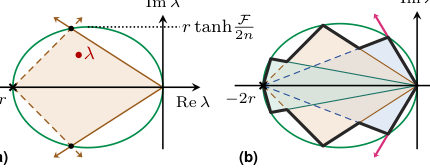
<figcaption class="paper-figure-caption"><b>Fig 1.</b> FIG. 1. Illustration of Theorem 1 for a unicyclic generator with maximum escape rate r and cycle affinity F ≥0. (a) Each eigen- value λ obeys the bounds (4) (solid brown) and (5) (dashed brown), which depend on the winding number w (equivalently, sorted eigen- value index). (b) Taking the union across all winding numbers w ∈{1, . . . , ⌈n/2⌉−1} gives a non-convex localization region for all eigenvalues (black outline). The green ellipse is the bound corresponding to the Uhl–Seifert conjecture [12]; our previous sector bound [22] is shown using magenta arrows.</figcaption>
</figure>
<figure class="paper-figure-card">
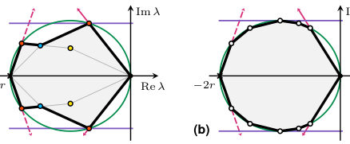
<figcaption class="paper-figure-caption"><b>Fig 2.</b> FIG. 2. (a) Theorem 4 illustrated on a 6-state generator with 3 cycles: (nc, Fc) = (3, 4), (4, 4), (5, 16). Eigenvalues are localized to a topology- and affinity-dependent region (thick black), defined as a union of convex hulls (thin grey lines) induced by the 3 cycles (blue, yellow, and orange dots). We show four Topology-dependent bounds from Table I: τ = 1 (solid magenta), τ = 0 (dashed magenta), τ = −Re λ/2r (purple lines), and τ = 1/2 (Uhl-Seifert ellipse, green). (b) Theorem 5 specifies a topology-free localization region in terms of F∗:= maxc tanh(Fc/2nc) and size n = 6. It is the convex hull of points induced by Farey fractions (white dots). We show four Size-dependent bounds from...</figcaption>
</figure>
</div>

<p><strong>Summary.</strong> This work establishes fundamental mathematical bounds on the complex eigenvalues of Markov generators by linking them to the system's non-equilibrium cycles. It proves that the oscillatory behavior of the system is constrained by a tradeoff between thermodynamic driving forces (cycle affinity) and the geometric winding number of the eigenvectors. This provides powerful, generalizable tools for analyzing relaxation dynamics in complex stochastic processes.</p>
<p><strong>Why it may be interesting.</strong> The connection between spectral properties (eigenvalues) and non-equilibrium thermodynamics (cycle affinity) provides powerful, quantitative bounds on relaxation dynamics, which is crucial for understanding open quantum systems and energy dissipation.</p>
<details>
<summary>Detailed structure</summary>
<p><strong>Main problem.</strong> To understand how complex eigenvalues of Markov generators, which govern oscillatory properties of relaxation and autocorrelation, are localized by non-equilibrium cycles.</p>
<p><strong>Main result.</strong> The paper proves that complex eigenvalues are confined to regions determined by the cycle affinity and the eigenvector's winding number, establishing new thermodynamic bounds on relaxation modes.</p>
<p><strong>Method.</strong> The analysis uses spectral theory applied to continuous-time Markov chains, relating eigenvalue properties to cycle affinities and winding numbers via geometric and convex hull constructions.</p>
<p><strong>Model / system.</strong> The system is modeled by continuous-time Markov chains whose dynamics are governed by a rate matrix (generator) $R$. The analysis focuses on irreducible, unicyclic, and multicyclic generators.</p>
<p><strong>Key observables.</strong> Complex eigenvalues ($\lambda$), Cycle Affinity ($F$), Winding Number ($\omega(u)$), and the relaxation/oscillation rates ($ ext{Re } \lambda, | ext{Im } \lambda|$).</p>
<p><strong>Important parameters / regimes.</strong> Cycle affinity ($F$), system size ($n$), and the parameter $    au \in [0, 1]$ used to interpolate between different decay regimes.</p>
<p><strong>Assumptions / limitations.</strong> The main theorems initially assume the generator is irreducible and unicyclic, though generalizations to multicyclic systems are presented.</p>
<p><strong>Figures summary.</strong> Figures illustrate the derived eigenvalue bounds, comparing the topology-dependent localization region (Theorem 4) against the simpler, topology-free region defined by the Farey sequence (Theorem 5).</p>
<p><strong>Paper structure.</strong> The paper progresses from establishing bounds in unicyclic systems (Theorem 1 &amp; 2), to generalizing these bounds to multicyclic systems (Theorem 3), and finally deriving two types of localization regions: one dependent on specific cycle topologies (Theorem 4) and one independent of topology (Theorem 5).</p>
</details>
<details>
<summary>Abstract</summary>
<p>The complex eigenvalues of Markov generators govern oscillatory properties of relaxation, autocorrelation, and linear response. Here we show that these eigenvalues are localized by nonequilibrium cycles of the generator, thus revealing a fundamental tradeoff between thermodynamic driving, oscillation, and decay of eigenmodes. Specifically, we prove that each complex eigenvalue is confined to a region determined by the cycle affinity and the eigenvector ``winding number'' of some nonequilibrium cycle. In unicyclic systems, we also demonstrate that the winding number coincides with the ordered eigenvalue index, yielding new thermodynamic bounds on the slowest and fastest relaxation modes. In multicyclic systems, our approach unifies and extends several previous inequalities and proves the Uhl--Seifert ellipse conjecture.</p>
</details>
<p><sub><a href="#top">↑ back to top</a></sub></p>

<p><a id="paper-2605.15863"></a></p>
<h3 id="gauge-engineered-tunable-mode-selection-in-non-hermitian-directed-graph-networks"><a href="http://arxiv.org/abs/2605.15863v1">Gauge-Engineered Tunable Mode Selection in Non-Hermitian Directed-Graph Networks</a></h3>
<p><strong>Authors:</strong> Wenwen Liu, Zhang Shuang<br>
<strong>Type:</strong> theory · <strong>Category:</strong> other · <strong>PDF:</strong> <a href="https://arxiv.org/pdf/2605.15863v1">https://arxiv.org/pdf/2605.15863v1</a><br>
<strong>Analysis basis:</strong> full PDF text, analyzed in chunks
<strong>Topic relevance:</strong> <code>correlated / nonlocal dissipation</code> <strong>3/5</strong> · <code>driven-dissipative phase transition</code> <strong>3/5</strong> · <code>methods for driven-dissipative</code> <strong>3/5</strong> · <code>analog quantum simulation</code> <strong>2/5</strong> · <code>non-equilibrium dynamics</code> <strong>2/5</strong> · <code>non-equilibrium universality</code> <strong>2/5</strong> · <code>Keldysh / 2PI / non-Gaussian methods</code> <strong>1/5</strong></p>
<div class="figure-strip-hint">↔ Scroll figures horizontally</div>
<div class="paper-figures-scroll">
<figure class="paper-figure-card">
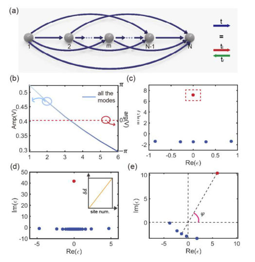
<figcaption class="paper-figure-caption"><b>Fig 1.</b> FIG.1 Non-Hermitian directed graph that supports single-</figcaption>
</figure>
<figure class="paper-figure-card">
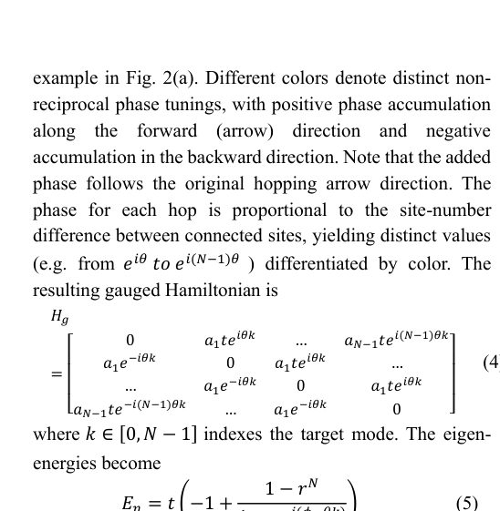
<figcaption class="paper-figure-caption"><b>Fig 2.</b> Figure 2(c-d) presents the results of single-mode selection under different gauge configurations. For 𝑘= 1 (𝑘= 3 ), the 2st (4st) mode is clearly selected, with its phase distribution shows 2𝜋 and 6𝜋 winding. Notably, all selected modes retain the same amplitude profile as in the ungauged case (Fig. 1(c)).</figcaption>
</figure>
<figure class="paper-figure-card">
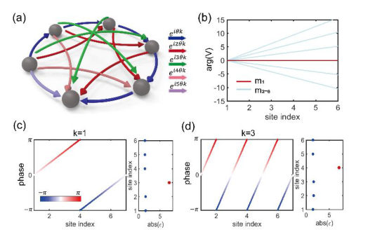
<figcaption class="paper-figure-caption"><b>Fig 3.</b> FIG. 2 Gauge engineered single mode selection. (a) 6-site</figcaption>
</figure>
<figure class="paper-figure-card">
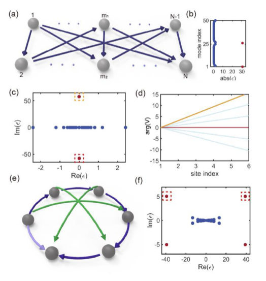
<figcaption class="paper-figure-caption"><b>Fig 4.</b> FIG. 3. Realization of double mode selection. (a) Graph</figcaption>
</figure>
<figure class="paper-figure-card">
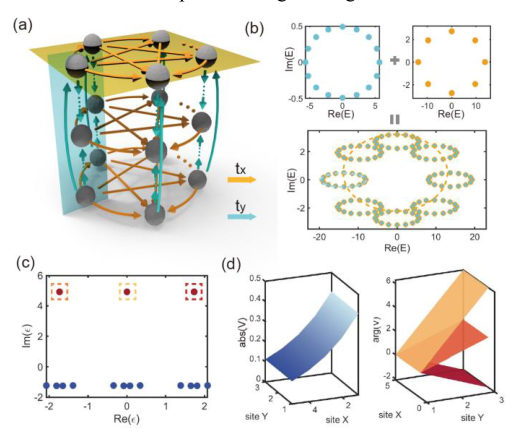
<figcaption class="paper-figure-caption"><b>Fig 5.</b> FIG. 4 Extension to multi-mode selection via dimension folding.</figcaption>
</figure>
</div>

<p><strong>Summary.</strong> This paper presents a gauge-engineering technique to achieve robust, tunable selection of specific eigenmodes in non-Hermitian directed-graph networks. By introducing synthetic gauge fields, the authors can force any desired pure decay mode to become the dominant state, bypassing the need for delicate gain/loss balancing. This advances applications in areas like single-mode lasers and quantum sensing.</p>
<p><strong>Why it may be interesting.</strong> This work provides a powerful, generalizable theoretical tool for controlling spectral properties in open quantum systems, directly relevant to designing next-generation single-mode lasers and quantum sensors.</p>
<details>
<summary>Detailed structure</summary>
<p><strong>Main problem.</strong> The core challenge is selectively isolating and controlling individual eigenmodes in open quantum and wave systems, especially in non-Hermitian settings where gain/loss balancing is difficult.</p>
<p><strong>Main result.</strong> The authors introduce a gauge-engineering method that robustly promotes any desired pure decay mode to the dominant state, enabling loss/gain-free control over mode profiles.</p>
<p><strong>Method.</strong> The technique involves adding synthetic gauge fields via phase-compensated non-reciprocal hopping to the directed-graph network Hamiltonian.</p>
<p><strong>Model / system.</strong> The system is modeled using non-Hermitian directed-graph networks. The method is generalized from single-mode selection in fully connected graphs to paired and multi-mode selection in half-connected and higher-dimensional graphs.</p>
<p><strong>Key observables.</strong> Pure decay modes (eigenstates with smooth exponential amplitude decay), the energy spectrum, and the ability to tune the dominant mode's energy gap.</p>
<p><strong>Important parameters / regimes.</strong> The gauge field phase ($    heta_k$), the graph connectivity (fully connected, half-connected), and the hopping parameters ($t$).</p>
<p><strong>Assumptions / limitations.</strong> The method relies on the underlying graph geometry supporting pure decay modes, and the gauge field is implemented via phase compensation without altering intrinsic loss/gain.</p>
<p><strong>Figures summary.</strong> Figures illustrate the emergence of a singular mode in fully connected graphs, demonstrate gauge engineering for single-mode selection, and show extensions to double and multi-mode selection via dimension folding.</p>
<p><strong>Paper structure.</strong> The paper progresses by first establishing the concept of geometry-protected pure decay modes, then detailing the gauge-engineering technique for single-mode selection, and finally generalizing this control to simultaneous paired and multi-mode selection in higher dimensions.</p>
</details>
<details>
<summary>Abstract</summary>
<p>Non-Hermitian physics enables novel control over open quantum and wave systems, but selectively isolating individual modes without delicate balancing of gain and loss remains challenging. Here we introduce a gauge-engineering method in directed-graph networks that support geometry-protected pure decay modes-eigenstates exhibiting smooth exponential amplitude decay along directed paths. In fully connected configurations, a single dominant mode naturally emerges with a large, tunable energy gap from the rest. By adding synthetic gauge fields via phase-compensated non-reciprocal hopping, we can promote any desired pure decay mode to the dominant position, while preserving its amplitude profile. The approach extends to simultaneous selection of paired modes in half-connected graphs and customizable multi-mode distributions in higher dimensions via orthogonal folding. Our method enables robust, loss/gain-free control over mode profiles, advancing applications in single-mode lasers, sensors, and quantum processing.</p>
</details>
<p><sub><a href="#top">↑ back to top</a></sub></p>

<p><a id="paper-2605.15988"></a></p>
<h3 id="microwave-to-optical-quantum-transduction-via-defect-mediated-scattering-in-diamond"><a href="http://arxiv.org/abs/2605.15988v1">Microwave-to-Optical Quantum Transduction via Defect-Mediated Scattering in Diamond</a></h3>
<p><strong>Authors:</strong> Kyosuke Goto, Hodaka Kurokawa, Hideo Kosaka, Kazuki Koshino<br>
<strong>Type:</strong> theory · <strong>Category:</strong> quantum information and computing · <strong>PDF:</strong> <a href="https://arxiv.org/pdf/2605.15988v1">https://arxiv.org/pdf/2605.15988v1</a><br>
<strong>Analysis basis:</strong> full PDF text, analyzed in chunks
<strong>Topic relevance:</strong> <code>QC/QI experiment</code> <strong>3/5</strong> · <code>quantum optics experiment</code> <strong>2/5</strong> · <code>Keldysh / 2PI / non-Gaussian methods</code> <strong>1/5</strong> · <code>Tavis-Cummings &amp; cavity-many-emitter</code> <strong>1/5</strong> · <code>analog quantum simulation</code> <strong>1/5</strong> · <code>correlated / nonlocal dissipation</code> <strong>1/5</strong> · <code>correlated cavity matter</code> <strong>1/5</strong> · <code>driven-dissipative phase transition</code> <strong>1/5</strong> · <code>entanglement &amp; information structure</code> <strong>1/5</strong> · <code>methods for driven-dissipative</code> <strong>1/5</strong> · <code>non-equilibrium dynamics</code> <strong>1/5</strong> · <code>spintronics-quantum-optics interface</code> <strong>1/5</strong></p>
<div class="figure-strip-hint">↔ Scroll figures horizontally</div>
<div class="paper-figures-scroll">
<figure class="paper-figure-card">
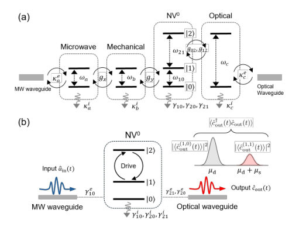
<figcaption class="paper-figure-caption"><b>Fig 1.</b> FIG. 1. (a) Mode coupling diagram. We operate in the triply resonant condition where the microwave mode, the mechanical mode, and the |0⟩↔|1⟩transition satisfy 𝜔𝑎= 𝜔𝑏= 𝜔10. The optical mode is tuned to the |0⟩↔|2⟩transition. (b) Schematic illustration of the transduction process in the reduced model. The microwave and optical waveguides couple directly to an NV0 center. A pump tone drives the |1⟩↔|2⟩transition resonantly at 𝜔21 = 𝜔20 −𝜔10.</figcaption>
</figure>
<figure class="paper-figure-card">
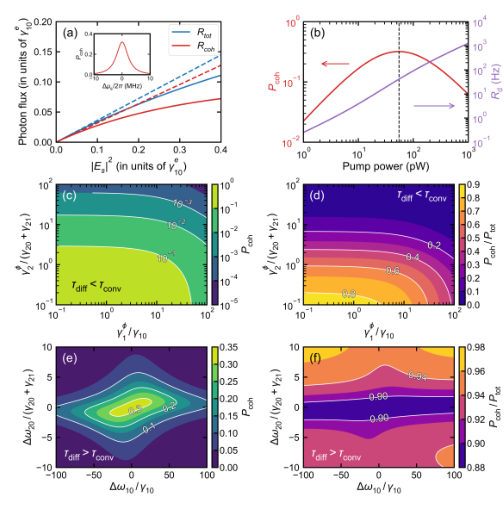
<figcaption class="paper-figure-caption"><b>Fig 2.</b> FIG. 2. Single-photon conversion process. (a) Total detected photon flux 𝑅tot (blue) and coherent photon flux 𝑅coh (red) as functions of incident signal microwave photon flux |𝐸s|2. The dashed lines indicate the tangents at the origin; their slopes give the corresponding conversion efficiencies for a single incident microwave photon, 𝑃tot and 𝑃coh, obtained by linear regression. The inset shows 𝑃coh as a function of the signal-frequency detuning Δ𝜇s. The conversion bandwidth is determined from the full width at half maximum of the curve shown in the inset. (b) Coherent conversion efficiency 𝑃coh (red) and dark count rate (purple) versus pump power. The vertical dotted line indicates 55 pW....</figcaption>
</figure>
<figure class="paper-figure-card">
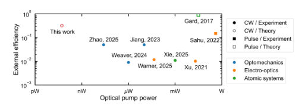
<figcaption class="paper-figure-caption"><b>Fig 3.</b> FIG. 4. Comparison of conversion efficiency versus pump power with the literature. References: Zhao, 2025 [13]; Weaver, 2024 [11]; Jiang, 2023 [9]; Warner, 2025 [7]; Xie, 2025 [20]; Xu, 2021 [5]; Gard, 2017 [32]; Sahu, 2022 [6].</figcaption>
</figure>
<figure class="paper-figure-card">
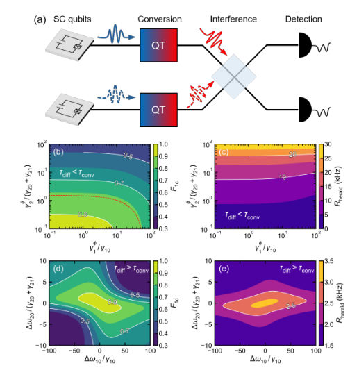
<figcaption class="paper-figure-caption"><b>Fig 4.</b> FIG. 3. Remote entanglement generation. (a) Microwave photons entangled with superconducting qubits (SC qubits) are converted into optical photons by quantum transducers (QTs) and injected into an interferometer, generating remote entanglement. (b) Fidelity and (c) heralding rate as functions of the pure-dephasing rates 𝛾𝜙 1 and 𝛾𝜙 2 for 𝜏diff &lt; 𝜏conv. The red dashed line indicates the contour 𝑃(A) coh /𝑃(A) tot = 0.5. (d) Fidelity and (e) heralding rate as functions of the detunings Δ𝜔10 and Δ𝜔20 for 𝜏diff &gt; 𝜏conv.</figcaption>
</figure>
</div>

<p><strong>Summary.</strong> This paper proposes a novel quantum transducer using a single color center in a diamond resonator to convert microwave signals to optical photons. By operating under strong coupling and at ultra-low pump powers, the device achieves high efficiency and enables remote entanglement generation. This work presents a promising, low-power solid-state route for building scalable quantum networks.</p>
<p><strong>Why it may be interesting.</strong> This work directly addresses a critical hardware bottleneck—the quantum interface—for distributed quantum networks, providing concrete metrics (efficiency, rate, fidelity) for a solid-state platform.</p>
<details>
<summary>Detailed structure</summary>
<p><strong>Main problem.</strong> The central challenge is developing an efficient, low-power microwave-to-optical quantum transducer for scalable, fault-tolerant quantum computation at cryogenic temperatures.</p>
<p><strong>Main result.</strong> The proposed device demonstrates a viable pathway by achieving a coherent conversion efficiency of 0.32 at extremely low pump powers (55 pW), enabling remote entanglement generation at $\sim 1$ kHz with fidelity exceeding 0.9.</p>
<p><strong>Method.</strong> The analysis uses theoretical modeling involving the steady-state approximation for coupled cavity modes and calculating the single-photon response via Taylor series expansion of the output photon flux.</p>
<p><strong>Model / system.</strong> The system is a quantum transducer based on a single color center ($    ext{NV}^0$) embedded in a diamond optomechanical resonator, modeled by coupling three resonators: microwave, mechanical, and optical.</p>
<p><strong>Key observables.</strong> Coherent conversion efficiency ($P_{coh}$), remote entanglement generation rate ($R_{herald}$), and entanglement fidelity ($F_{1c}$).</p>
<p><strong>Important parameters / regimes.</strong> Operating at the triply resonant condition ($\omega_a = \omega_b = \omega_{10}$); low pump power ($\sim 55 	ext{ pW}$); and the comparison between spectral diffusion and conversion timescales ($  au_{diff}$ vs $ au_{conv}$).</p>
<p><strong>Assumptions / limitations.</strong> The analysis assumes the drive frequency component is separable from the converted frequency component by a filter, and the single-photon response is obtained by linearizing the output flux calculation around zero input power.</p>
<p><strong>Figures summary.</strong> Figures illustrate the mode coupling diagram and the schematic of the transduction process; Figure 2 shows the dependence of total and coherent photon flux on input power, and the impact of spectral diffusion rates on efficiency.</p>
<p><strong>Paper structure.</strong> The paper first establishes the physical model and Hamiltonian, then derives the input-output relation, calculates the single-photon response by linearizing the output flux, and finally discusses the performance metrics like entanglement generation rate and fidelity, while addressing noise limitations from spectral diffusion.</p>
</details>
<details>
<summary>Abstract</summary>
<p>Scaling up superconducting quantum processors remains a central challenge for realizing fault-tolerant quantum computation. Although distributed architectures based on optical photons offer a promising route to scalability, they require an efficient microwave-to-optical quantum transducer that operates at cryogenic temperatures. Existing approaches typically rely on strong optical pumping, which induces undesirable heating and degrades single-photon coherence. Here, we propose a microwave-to-optical quantum transducer based on double-resonant scattering from a single color center embedded in a diamond optomechanical resonator. We show that strong coupling between the color center and the optical cavity enables coherent conversion at extremely low pump powers on the order of 10 pW. The proposed device enables remote entanglement generation on the order of 1 kHz with a fidelity exceeding 0.9, demonstrating a viable pathway toward ultra-low-power, high-efficiency quantum transducers based on individual solid-state defects for future distributed superconducting quantum networks.</p>
</details>
<p><sub><a href="#top">↑ back to top</a></sub></p>

<p><a id="paper-2605.16195"></a></p>
<h3 id="efficient-quantum-algorithm-for-linear-matrix-differential-equations-and-applications-to-open-quantum-systems"><a href="http://arxiv.org/abs/2605.16195v1">Efficient quantum algorithm for linear matrix differential equations and applications to open quantum systems</a></h3>
<p><strong>Authors:</strong> Sophia Simon, Dominic W. Berry, Rolando D. Somma<br>
<strong>Type:</strong> theory · <strong>Category:</strong> quantum information and computing · <strong>PDF:</strong> <a href="https://arxiv.org/pdf/2605.16195v1">https://arxiv.org/pdf/2605.16195v1</a><br>
<strong>Analysis basis:</strong> full PDF text, analyzed in chunks
<strong>Topic relevance:</strong> <code>methods for driven-dissipative</code> <strong>3/5</strong> · <code>Keldysh / 2PI / non-Gaussian methods</code> <strong>2/5</strong> · <code>analog quantum simulation</code> <strong>2/5</strong> · <code>non-equilibrium dynamics</code> <strong>2/5</strong> · <code>Kondo &amp; dissipative impurity</code> <strong>1/5</strong> · <code>correlated / nonlocal dissipation</code> <strong>1/5</strong> · <code>driven-dissipative phase transition</code> <strong>1/5</strong> · <code>entanglement &amp; information structure</code> <strong>1/5</strong> · <code>non-equilibrium universality</code> <strong>1/5</strong></p>
<div class="figure-strip-hint">↔ Scroll figures horizontally</div>
<div class="paper-figures-scroll">
<figure class="paper-figure-card">
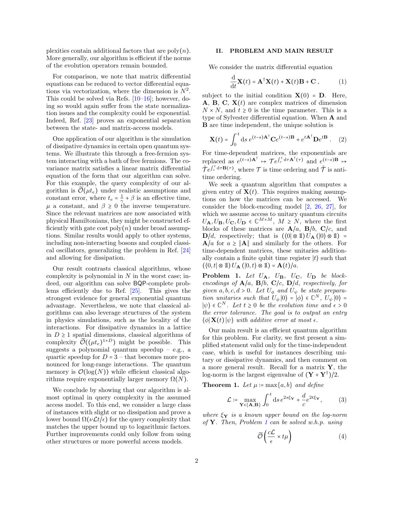
<figcaption class="paper-figure-caption"><b>Fig 1.</b> Low-resolution page preview, page 2</figcaption>
</figure>
<figure class="paper-figure-card">
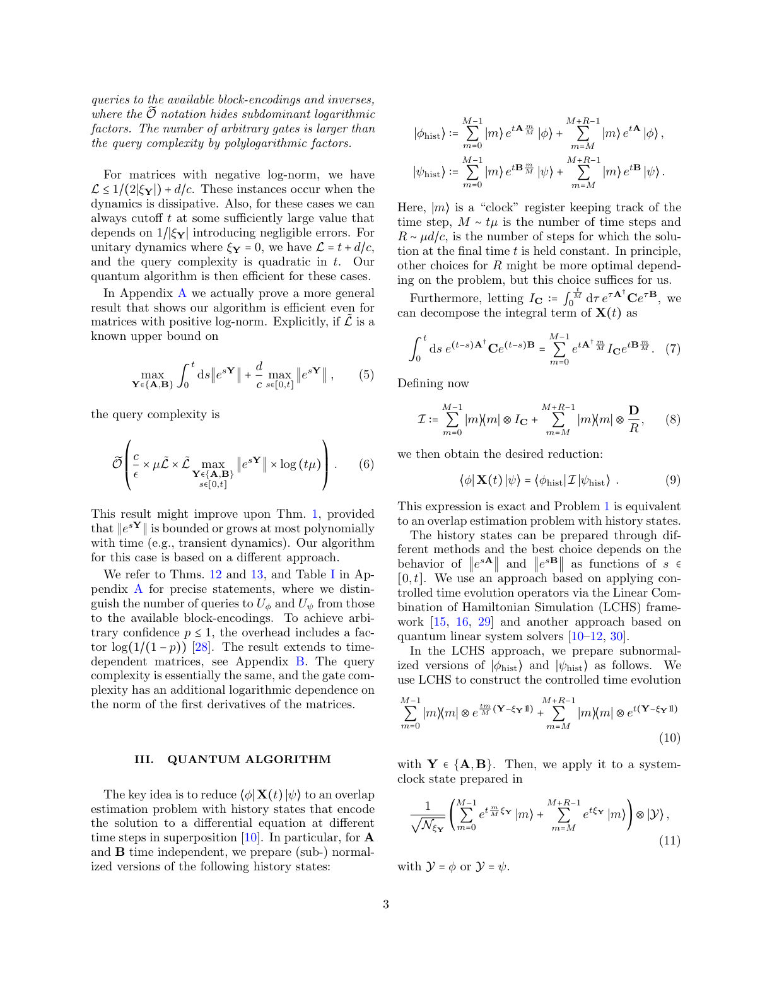
<figcaption class="paper-figure-caption"><b>Fig 2.</b> Low-resolution page preview, page 3</figcaption>
</figure>
<figure class="paper-figure-card">
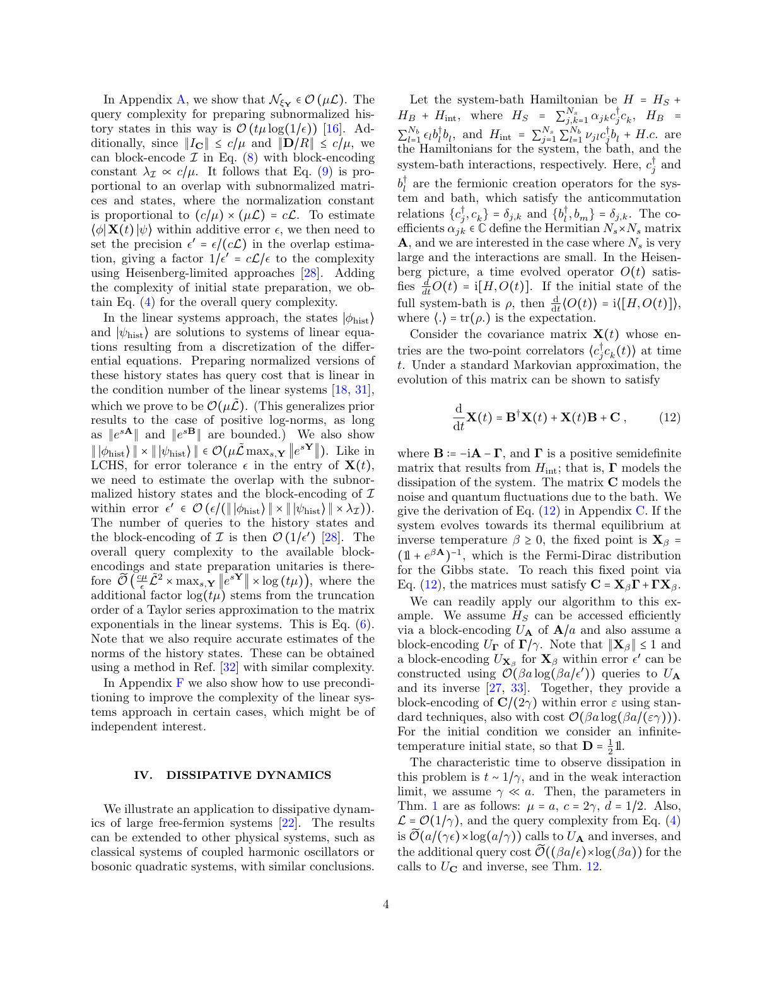
<figcaption class="paper-figure-caption"><b>Fig 3.</b> Low-resolution page preview, page 4</figcaption>
</figure>
<figure class="paper-figure-card">
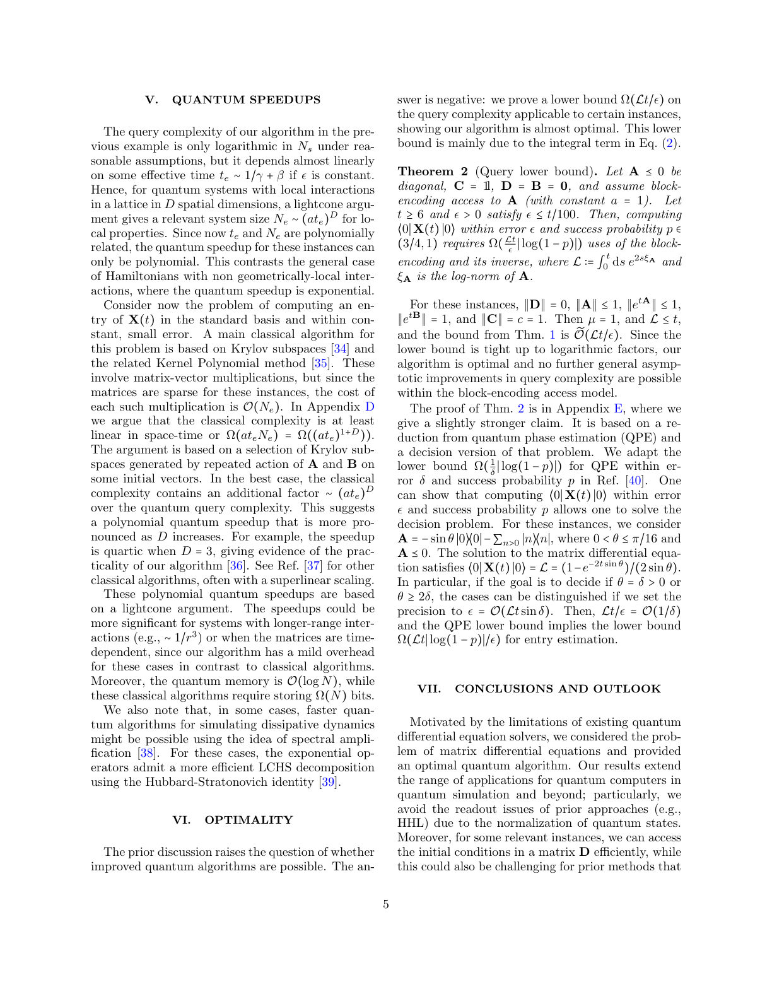
<figcaption class="paper-figure-caption"><b>Fig 4.</b> Low-resolution page preview, page 5</figcaption>
</figure>
<figure class="paper-figure-card">
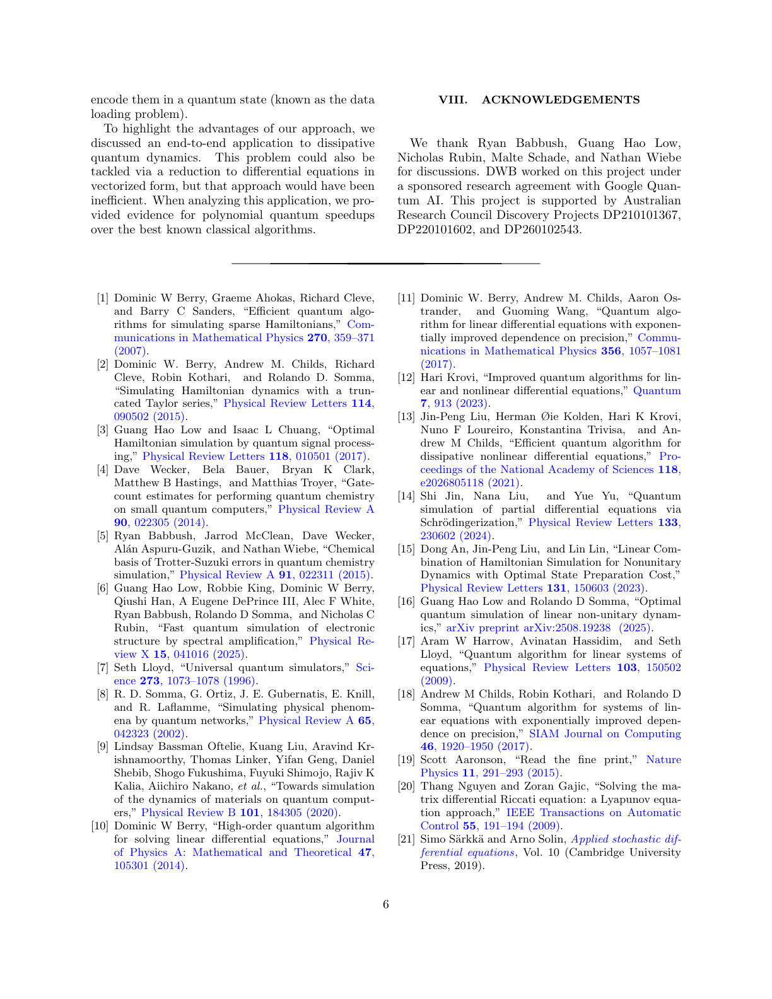
<figcaption class="paper-figure-caption"><b>Fig 5.</b> Low-resolution page preview, page 6</figcaption>
</figure>
</div>

<p><strong>Summary.</strong> This paper presents an efficient quantum algorithm for solving linear matrix differential equations, crucial for simulating open quantum systems. By reformulating the problem as an overlap estimation using history states, it achieves near-optimal query complexity. This advances the field by providing a scalable quantum tool for dynamics that previously suffered from exponential resource requirements.</p>
<p><strong>Why it may be interesting.</strong> This work provides a concrete, quantum-algorithmic tool for simulating complex, time-dependent open quantum dynamics, directly impacting how quantum simulation algorithms are designed for realistic physical systems.</p>
<details>
<summary>Detailed structure</summary>
<p><strong>Main problem.</strong> Developing an efficient, near-optimal quantum algorithm to compute matrix elements of the solution to linear matrix differential equations (LMDES).</p>
<p><strong>Main result.</strong> The algorithm achieves a query complexity of $\widetilde{\mathcal{O}}(
u\mathcal{L} t/\epsilon)$, which is proven to be optimal up to logarithmic factors.</p>
<p><strong>Method.</strong> The approach utilizes 'history states' and block-encoding techniques to reduce the differential equation solving problem to an overlap estimation problem, avoiding exponential normalization issues of prior methods.</p>
<p><strong>Model / system.</strong> The core model is the LMDES, $rac{d}{dt}X(t) = A^\dagger X(t) + X(t)B + C$, which is applied to simulate open quantum systems, such as non-interacting fermions.</p>
<p><strong>Key observables.</strong> The primary observable is the matrix element $\langle\phi|X(t)|\psi
angle$, representing the solution at time $t$.</p>
<p><strong>Important parameters / regimes.</strong> The complexity depends on the time $t$, the desired precision $\epsilon$, and system-dependent constants $\mathcal{L}$ and $
u$.</p>
<p><strong>Assumptions / limitations.</strong> The analysis relies on the block-encoding model and often employs the Markovian approximation when simulating open quantum systems.</p>
<p><strong>Figures summary.</strong> The notes reference comparisons of query costs between the linear systems approach and the LCHS approach in Table II, and complexity scaling in various theorems.</p>
<p><strong>Paper structure.</strong> The paper develops by first establishing the general framework for LMDES solving, contrasting it with prior methods, then applying it to specific physical models (like free fermions), and finally proving optimality via lower bounds derived from QPE.</p>
</details>
<details>
<summary>Abstract</summary>
<p>We present an efficient, nearly optimal quantum algorithm for solving linear matrix differential equations, with applications to the simulation of open quantum systems and beyond. For unitary or dissipative dynamics, the algorithm computes an entry of the solution matrix with query complexity $\widetilde{\mathcal{O}}(ν\mathcal{L} t/ε)$, where the constant $ν$ depends on the problem parameters, $\mathcal{L}$ involves a time integral of upper bounds on the norms of evolution operators, and $ε$ is the error. In particular, $ν\mathcal{L}$ is linear in $t$ for unitary dynamics and can be a constant for dissipative dynamics. Our result contrasts prior quantum approaches for differential equations that typically require exponential time for this problem due to the encoding in a quantum state, which can lead to exponentially small amplitudes. We demonstrate the utility of the algorithm through an end-to-end application, namely the simulation of dissipative dynamics for non-interacting fermions, which can be extended to other quantum and classical systems. We compare with classical algorithms and give evidence of polynomial quantum speedups for systems in a lattice, which become more pronounced for systems with long-range interactions and can be shown to be exponential in general. We also provide a lower bound of $Ω(ν\mathcal{L} t/ε)$ for unitary or dissipative dynamics that proves our algorithm is optimal up to logarithmic factors.</p>
</details>
<p><sub><a href="#top">↑ back to top</a></sub></p>

<p><a id="paper-2605.15798"></a></p>
<h3 id="event-based-spatiotemporal-networks-for-modelling-emergent-phenomena-in-complex-systems"><a href="http://arxiv.org/abs/2605.15798v1">Event-based spatiotemporal networks for modelling emergent phenomena in complex systems</a></h3>
<p><strong>Authors:</strong> Matthijs Romeijnders, Michiel van Boven, Francesco Corman, Carl D. Modes, Phillip Staniczencko, Debabrata Panja<br>
<strong>Type:</strong> theory · <strong>Category:</strong> disordered systems and neural networks · <strong>PDF:</strong> <a href="https://arxiv.org/pdf/2605.15798v1">https://arxiv.org/pdf/2605.15798v1</a><br>
<strong>Analysis basis:</strong> full PDF text, analyzed in chunks
<strong>Topic relevance:</strong> <code>non-equilibrium dynamics</code> <strong>3/5</strong> · <code>analog quantum simulation</code> <strong>2/5</strong> · <code>driven-dissipative phase transition</code> <strong>2/5</strong> · <code>methods for driven-dissipative</code> <strong>2/5</strong> · <code>non-equilibrium universality</code> <strong>2/5</strong> · <code>Keldysh / 2PI / non-Gaussian methods</code> <strong>1/5</strong> · <code>correlated / nonlocal dissipation</code> <strong>1/5</strong> · <code>entanglement &amp; information structure</code> <strong>1/5</strong></p>
<div class="figure-strip-hint">↔ Scroll figures horizontally</div>
<div class="paper-figures-scroll">
<figure class="paper-figure-card">
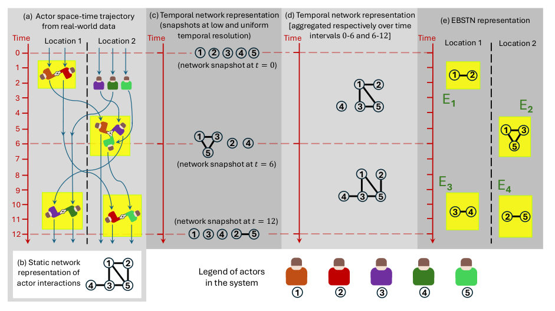
<figcaption class="paper-figure-caption"><b>Fig 1.</b> Figure 1: From real-world data to network representations. Panel (a): Actor dynamics in a schematic real-world system (see legend of actors in colour and alphanumeric codes). Yellow rectangles denote locations, timings and durations of actor interactions: the top and the bottom boundaries of every rectangle respectively denote the starting and the ending time of actor interactions. Shown in panel (b) is a static network representation of it is obtained when space and time are both abstracted away; it loses all information on the times, locations, sequence and durations of actor interactions. In panel (c) we show a version of temporal network formed in multiple layers, each layer corresponds...</figcaption>
</figure>
<figure class="paper-figure-card">
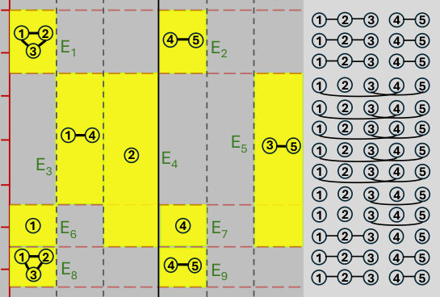
<figcaption class="paper-figure-caption"><b>Fig 2.</b> Figure 2: Comparison between EBSTN and the current best, TN, for the infectious disease epidemiology example. Mixing on a day amongst the family members of two different families in the model (a total of five actors), The families reside in two different municipalities. (a) The event-based-spatio-temporal network (EBSTN): events are shown in the same scheme as Fig. 1(e). By construction, the EBSTN leads to the fragmentation of the full network of actors in terms of fully connected components, which is not the case for the corresponding temporal network (TN) — formed by taking snapshots at 30 minutes past the hour at hourly interval in panel (b) in the same scheme as 1(c) — resulting in...</figcaption>
</figure>
<figure class="paper-figure-card">
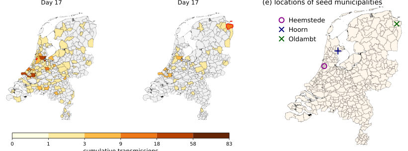
<figcaption class="paper-figure-caption"><b>Fig 3.</b> Figure 3: Simulations of the early stages of an outbreak of a novel pathogen that is introduced in working adults in selected Dutch municipalities. The model includes ∼170,000 actors, who are categorised into 11 demographic groups and assigned to 355 municipalities of residence. Actors’ movements are tracked on an hourly resolution, obeying day-night and weekday-weekend mobility rhythms, and they mixed within municipality-specific settings such as workplaces, homes, and schools (see Methods). Panels (a) and (b) show the cumulative number of pathogen transmissions at day 7, 12, and 17 post introduction for a central [Heemstede, panel (a)] and a remote [Oldambt, panel (b)] municipality. The...</figcaption>
</figure>
<figure class="paper-figure-card">
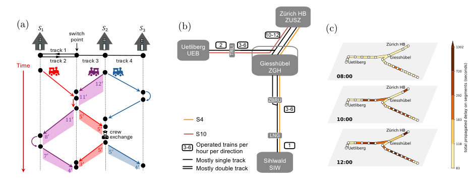
<figcaption class="paper-figure-caption"><b>Fig 4.</b> Figure 4: Modelling of public transport system, specifically railway operations. (a) An illustrative situation with periodic services (see main text) reported as time-distance diagram. A single track is available between the switch point and station S2, and between stations S2 and S3 in Fig. 4(a); once a train enters such a section, no other train can enter it until the occupying train exits. In Fig. 4(a), the scheduled (periodic) services — and executed ones if there are no delays — are shown by dark-coloured arrows, while the correspondingly lighter shaded trapezoids indicate the evolution of resulting delays in minutes, in an operational setting, when an example initial delay is...</figcaption>
</figure>
<figure class="paper-figure-card">
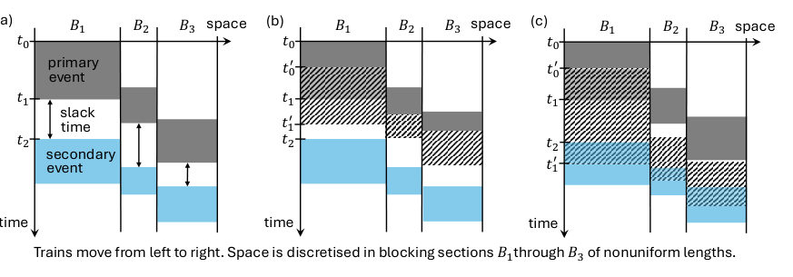
<figcaption class="paper-figure-caption"><b>Fig 5.</b> Figure 5: Space-time diagram showing delay propagation on infrastructure (to avoid cluttering the figure, event start and end times are marked only for blocking section B1). (a) The schedule for two different services – preceding (gray) and following (blue) – travelling through three sequential blocking sections of different lengths B1 →B2 →B3 on an infrastructure link. The event that the preceding (resp. following) service keeps a blocking section occupied we call the primary (resp. secondary) event. Each event — i.e., running of a service in a blocking section — requires train unit(s) and crew, i.e., an assembly of these actors of the system (see Fig. SI.1). The duration of the primary...</figcaption>
</figure>
</div>

<p><strong>Summary.</strong> This paper introduces Event-based Spatiotemporal Networks (EBSTNs) as a superior computational framework for modeling complex systems. By encoding system dynamics as discrete, spatio-temporally anchored events, it overcomes limitations in traditional methods that fail to capture micro-scale heterogeneity. The framework is successfully applied to model epidemic spread and delay propagation in public transport, demonstrating its versatility across diverse physical domains.</p>
<p><strong>Why it may be interesting.</strong> While the application is in complex systems modeling, the focus on capturing fine-grained, non-equilibrium dynamics and emergent behavior from local interactions shares conceptual overlap with modeling non-equilibrium quantum many-body systems or open quantum systems where local interactions drive global behavior.</p>
<details>
<summary>Detailed structure</summary>
<p><strong>Main problem.</strong> Modeling emergent phenomena in complex systems where macroscopic dynamics arise from fine-grained, heterogeneous micro-level processes across space and time.</p>
<p><strong>Main result.</strong> Event-based spatiotemporal networks (EBSTNs) provide a unified, flexible, and computationally efficient framework to model such emergent behavior.</p>
<p><strong>Method.</strong> The framework encodes system processes as discrete events anchored in space and time, contrasting with coarse-graining or fixed-time-step network approaches.</p>
<p><strong>Model / system.</strong> The model is the Event-based Spatiotemporal Network (EBSTN), which captures four types of information per event: location, timing, involved actors, and duration. It is applied to real-world systems like pathogen spread and public transport delays.</p>
<p><strong>Key observables.</strong> Cumulative pathogen transmissions, normalized entropy of infectious actors, and propagated delays in public transport services.</p>
<p><strong>Important parameters / regimes.</strong> Pathogen transmission rate (beta), latent/infectious periods, and network parameters like scheduled slack time and exogenous delay distributions.</p>
<p><strong>Assumptions / limitations.</strong> The primary assumption is that the system's dynamics are best captured by tracking discrete, causal events rather than assuming uniform mixing or fixed spatial/temporal resolutions.</p>
<p><strong>Figures summary.</strong> Figures illustrate the construction of EBSTNs from real-world trajectories, show pathogen spread simulations in Dutch municipalities, and map delay propagation across a railway network using space-time diagrams.</p>
<p><strong>Paper structure.</strong> The paper introduces the EBSTN framework by contrasting it with limitations in traditional network models (TNs, ABMs). It then demonstrates its efficacy through two major case studies: infectious disease epidemiology in the Netherlands and delay propagation in the Zürich S-bahn system, concluding with broader applicability discussions.</p>
</details>
<details>
<summary>Abstract</summary>
<p>Complex systems display emergent phenomena that vary significantly across spatial and temporal scales. These variations originate from fine-grained system processes, yet arriving at macroscopic dynamics from micro-level data -- particularly when large, high-resolution datasets are available -- remains a persistent challenge. Here we develop event-based spatiotemporal networks, a computational modelling framework that encodes system processes as discrete events anchored in space and time. Event-based spatiotemporal networks offer a unified, flexible and efficient approach to generate emergent behaviour in complex systems across space and time from these events. We demonstrate the effectiveness of event-based spatiotemporal networks through two illustrative real-world applications. First, following a local outbreak of a novel respiratory pathogen in the Netherlands, spatiotemporal networks enable fine-grained tracking of transmission routes and infection patterns through space and time. Second, we use spatiotemporal networks to model propagation of delays in a public transportation system (S-bahn) around Zürich, Switzerland. We also discuss broader uses of event-based spatiotemporal networks in fields like developmental biology and community ecology, where focusing on events rather than static system states can improve data analysis, simulation, and collection strategies.</p>
</details>
<p><sub><a href="#top">↑ back to top</a></sub></p>

<p><a id="paper-2605.15969"></a></p>
<h3 id="quantum-mechanics-for-classical-transport-equations"><a href="http://arxiv.org/abs/2605.15969v1">Quantum mechanics for classical transport equations</a></h3>
<p><strong>Authors:</strong> Christof Wetterich<br>
<strong>Type:</strong> theory · <strong>Category:</strong> statistical mechanics · <strong>PDF:</strong> <a href="https://arxiv.org/pdf/2605.15969v1">https://arxiv.org/pdf/2605.15969v1</a><br>
<strong>Analysis basis:</strong> full PDF text, analyzed in chunks
<strong>Topic relevance:</strong> <code>Keldysh / 2PI / non-Gaussian methods</code> <strong>3/5</strong> · <code>methods for driven-dissipative</code> <strong>2/5</strong> · <code>non-equilibrium dynamics</code> <strong>2/5</strong> · <code>analog quantum simulation</code> <strong>1/5</strong> · <code>correlated / nonlocal dissipation</code> <strong>1/5</strong> · <code>driven-dissipative phase transition</code> <strong>1/5</strong> · <code>entanglement &amp; information structure</code> <strong>1/5</strong> · <code>interference shaping light</code> <strong>1/5</strong> · <code>non-equilibrium universality</code> <strong>1/5</strong></p>
<div class="figure-strip-hint">↔ Scroll figures horizontally</div>
<div class="paper-figures-scroll">
<figure class="paper-figure-card">
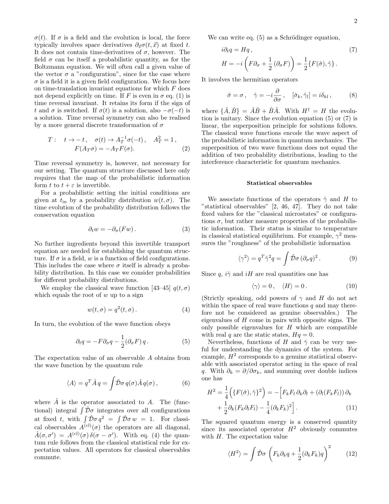
<figcaption class="paper-figure-caption"><b>Fig 1.</b> Low-resolution page preview, page 2</figcaption>
</figure>
<figure class="paper-figure-card">

<figcaption class="paper-figure-caption"><b>Fig 2.</b> Low-resolution page preview, page 3</figcaption>
</figure>
<figure class="paper-figure-card">

<figcaption class="paper-figure-caption"><b>Fig 3.</b> Low-resolution page preview, page 4</figcaption>
</figure>
<figure class="paper-figure-card">

<figcaption class="paper-figure-caption"><b>Fig 4.</b> Low-resolution page preview, page 5</figcaption>
</figure>
<figure class="paper-figure-card">

<figcaption class="paper-figure-caption"><b>Fig 5.</b> Low-resolution page preview, page 6</figcaption>
</figure>
</div>

<p><strong>Summary.</strong> This work establishes a formal quantum mechanical description for classical transport equations governed by probabilistic initial conditions. By mapping the probabilistic evolution onto a complex wave function, the authors show that quantum features, such as interference and non-commuting observables, naturally emerge. This provides a powerful theoretical tool for analyzing complex classical stochastic processes through a quantum lens.</p>
<p><strong>Why it may be interesting.</strong> It provides a formal, non-standard framework for how quantum mechanical principles (like non-commutativity and interference) can manifest within purely classical, probabilistic dynamical systems, which is relevant for understanding open quantum systems.</p>
<details>
<summary>Detailed structure</summary>
<p><strong>Main problem.</strong> The paper investigates the formal connection between classical transport equations with probabilistic initial conditions and the principles of quantum mechanics.</p>
<p><strong>Main result.</strong> It demonstrates that the quantum formalism can be constructed for these classical probabilistic systems, allowing quantum features like superposition and interference to emerge naturally.</p>
<p><strong>Method.</strong> The authors construct a complex functional integral and derive a Schrödinger-like equation for the time-local probabilistic information encoded in a classical wave function.</p>
<p><strong>Model / system.</strong> The model involves classical transport equations, which are treated as probabilistic automata in a discrete setting. The quantum description utilizes a complex wave function $\psi(t, \gamma)$ evolving unitarily.</p>
<p><strong>Key observables.</strong> Expectation values of observables $\langle A 
angle$, quantum energy $E_n$, and conserved quantities derived from symmetry generators.</p>
<p><strong>Important parameters / regimes.</strong> The difference between quantum energy $E_n$ and classical energy $E_{cl}$ is a key diagnostic.</p>
<p><strong>Assumptions / limitations.</strong> The approach assumes the existence of an invertible transport equation mapping $t 	o t+\epsilon$ and relies on constructing an extended weight distribution $  ilde{w}[\sigma, \gamma]$.</p>
<p><strong>Paper structure.</strong> The paper progresses from viewing classical transport equations as quantum systems, deriving the Schrödinger equation for the wave function, establishing the role of non-commuting statistical observables, and finally developing the extended weight distribution to unify classical and quantum information.</p>
</details>
<details>
<summary>Abstract</summary>
<p>Classical transport equations with probabilistic initial conditions can be viewed as quantum systems.   In a discrete version they are probabilistic automata. The time-local probabilistic information is encoded in a classical wave function.   Its unitary evolution obeys a Schrödinger equation.   Statistical observables are represented by operators which do not commute with the ones associated to classical observables.   Examples are functions of the quantum energy or the quantum angular momentum. They are important conserved quantities.   We construct a complex functional integral for the quantum system which describes the probabilistic classical transport equation.   The characteristic features of quantum mechanics, as the superposition of wave functions, interference, the importance of phases,   non-commuting operators or a unitary time evolution, are realized by probabilistic classical transport equations.</p>
</details>
<p><sub><a href="#top">↑ back to top</a></sub></p>

<p><a id="paper-2605.15283"></a></p>
<h3 id="stochastic-safety-limits-and-scale-dependent-power-fluctuations-in-nuclear-reactors-a-critical-scaling-approach"><a href="http://arxiv.org/abs/2605.15283v1">Stochastic Safety Limits and Scale-Dependent Power Fluctuations in Nuclear Reactors: A Critical Scaling Approach</a></h3>
<p><strong>Authors:</strong> V. V. Ryazanov<br>
<strong>Type:</strong> theory · <strong>Category:</strong> disordered systems and neural networks · <strong>PDF:</strong> <a href="https://arxiv.org/pdf/2605.15283v1">https://arxiv.org/pdf/2605.15283v1</a><br>
<strong>Analysis basis:</strong> full PDF text, analyzed in chunks
<strong>Topic relevance:</strong> <code>non-equilibrium dynamics</code> <strong>3/5</strong> · <code>non-equilibrium universality</code> <strong>3/5</strong> · <code>Keldysh / 2PI / non-Gaussian methods</code> <strong>2/5</strong> · <code>methods for driven-dissipative</code> <strong>2/5</strong> · <code>correlated / nonlocal dissipation</code> <strong>1/5</strong> · <code>driven-dissipative phase transition</code> <strong>1/5</strong></p>
<div class="figure-strip-hint">↔ Scroll figures horizontally</div>
<div class="paper-figures-scroll">
<figure class="paper-figure-card">

<figcaption class="paper-figure-caption"><b>Fig 1.</b> Fig. 1 shows the dependence of the average time to reach &lt;T&gt;(a)=T(a) the level Φ, calculated using formula (22) with =1.</figcaption>
</figure>
<figure class="paper-figure-card">

<figcaption class="paper-figure-caption"><b>Fig 2.</b> Fig. 1. Dependence of the average time to reach &lt;T&gt;(a)=T(a) the level Φ= P/P0=0.1, for form (A) Rev. [17], calculated using formula (22).</figcaption>
</figure>
<figure class="paper-figure-card">

<figcaption class="paper-figure-caption"><b>Fig 3.</b> Fig. 2. Dependence of the average time to reach &lt;T&gt;(a)=T(a) the level Φ= P/P0=0.1, for form (A) Rev. [17], calculated using formula (22)-(23) at =0.0932, veff=0.025, =1.</figcaption>
</figure>
<figure class="paper-figure-card">

<figcaption class="paper-figure-caption"><b>Fig 4.</b> Fig. 3. Dependence of the average time to reach &lt;T&gt;(a)=T(a) the level Φ= P P/P0=0.1, for form (A) Rev. [17], calculated using formula (22)-(23) at =0.0632, veff=0.025, =1.</figcaption>
</figure>
<figure class="paper-figure-card">

<figcaption class="paper-figure-caption"><b>Fig 5.</b> Fig. 4. Dependence of the average time to reach &lt;T&gt;(a)=T(a) the level Φ= P P/P0=0.1, for form (E) Rev. [17], calculated using formula (22), (24) at =0.002, veff=0.03, =1.</figcaption>
</figure>
</div>

<p><strong>Summary.</strong> This theoretical work applies advanced stochastic process theory, specifically using boundary functionals and Lévy statistics, to assess safety risks in nuclear reactors. It demonstrates that under certain conditions, neutron fluctuations exhibit heavy-tailed power-law behavior characteristic of Directed Percolation rather than simple Gaussian diffusion. This implies that standard safety estimates may underestimate the risk of rapid, localized power surges.</p>
<p><strong>Why it may be interesting.</strong> The mathematical framework of Lévy flights and Directed Percolation, used here to model classical engineering safety, provides a powerful analogy for understanding non-equilibrium dynamics and anomalous transport in complex quantum or condensed matter systems.</p>
<details>
<summary>Detailed structure</summary>
<p><strong>Main problem.</strong> The paper analyzes stochastic safety limits and scale-dependent power fluctuations in nuclear reactors by modeling the neutron population as a random process.</p>
<p><strong>Main result.</strong> The system's risk profile is critically dependent on the statistical regime, transitioning from classical Gaussian diffusion to Directed Percolation (DP) when fluctuations exhibit heavy tails, especially at the mesoscale (fuel assembly size).</p>
<p><strong>Method.</strong> The analysis employs boundary functionals and the Lundberg equation, connecting the process to Lévy-stable distributions via the characteristic function.</p>
<p><strong>Model / system.</strong> The physical system is a nuclear reactor core, modeled by the stochastic evolution of neutron flux ($\Phi(t)$). The underlying stochastic process is characterized by the distribution of 'effective progenies' ($P(k) \sim k^{-a}$), which dictates the system's statistical behavior.</p>
<p><strong>Key observables.</strong> First-passage time ($T_{FPT}$), power peaks, catastrophic power surges, and the scaling exponent $a$ of the power-law distribution.</p>
<p><strong>Important parameters / regimes.</strong> Stability index ($\alpha$), power-law exponent ($a$), system size ($L$), and the asymmetry parameter ($eta$).</p>
<p><strong>Assumptions / limitations.</strong> The analysis assumes the applicability of Lévy-stable process theory and models the transition between different stochastic regimes based on the divergence of higher moments.</p>
<p><strong>Figures summary.</strong> The notes reference tables comparing safety time $\langle T 
angle$ across different asymmetry ($eta$) and scaling ($a$) regimes, showing significant reductions in safety margin when $eta=1$ and $1 < a < 2$.</p>
<p><strong>Paper structure.</strong> The paper builds from general boundary functional theory to specific applications in reactor physics, contrasting Gaussian (classical) behavior with Lévy-DP regimes, and finally quantifying the impact of asymmetry ($eta$) and finite size ($L$) on the mean time to failure.</p>
</details>
<details>
<summary>Abstract</summary>
<p>Applying boundary functionals of random risk processes to various physical problems makes it possible to determine many important characteristics of these problems. For example, a special case of boundary functionals is the time to first reach a level, which is widely and successfully applied to a variety of problems. We consider the application of boundary functionals to solving nuclear safety problems. In situations such as reactor startup, as well as for certain types of reactors, neutron behavior changes. Neutron clustering begins to play an important role, and the distributions characterizing neutron behavior change. The normal Gaussian distribution is replaced by stable limiting, distributions to which the sums of random variables converge. Boundary functionals allow us to accurately calculate the statistics of random events, determine the behavior of reactor power peaks, the probabilities of catastrophic power surges, and other quantities important for reactor safety, providing a mathematical bridge between the abstract theory of directed percolation and engineering calculations of protection parameters. This article examines the first-passage time to reach a certain level.</p>
</details>
<p><sub><a href="#top">↑ back to top</a></sub></p>

<p><a id="paper-2605.15968"></a></p>
<h3 id="anomalous-transport-from-effective-field-theory"><a href="http://arxiv.org/abs/2605.15968v1">Anomalous Transport from Effective Field Theory</a></h3>
<p><strong>Authors:</strong> Rémy Larue, Amaury Marchon, Jérémie Quevillon, Diego Saviot<br>
<strong>Type:</strong> theory · <strong>Category:</strong> statistical mechanics · <strong>PDF:</strong> <a href="https://arxiv.org/pdf/2605.15968v1">https://arxiv.org/pdf/2605.15968v1</a><br>
<strong>Analysis basis:</strong> full PDF text, analyzed in chunks
<strong>Topic relevance:</strong> <code>Keldysh / 2PI / non-Gaussian methods</code> <strong>3/5</strong> · <code>non-equilibrium dynamics</code> <strong>3/5</strong> · <code>methods for driven-dissipative</code> <strong>2/5</strong> · <code>analog quantum simulation</code> <strong>1/5</strong> · <code>driven-dissipative phase transition</code> <strong>1/5</strong> · <code>non-equilibrium universality</code> <strong>1/5</strong></p>
<div class="figure-strip-hint">↔ Scroll figures horizontally</div>
<div class="paper-figures-scroll">
<figure class="paper-figure-card">

<figcaption class="paper-figure-caption"><b>Fig 1.</b> Figure 1. Consistent axial anomaly (black) and its repartition between the divergence of the axial current (blue) and the mass explicit breaking (brown).</figcaption>
</figure>
</div>

<p><strong>Summary.</strong> This work provides a rigorous, systematic calculation of anomalous transport effects in a fermionic system at finite temperature. By using an Effective Field Theory approach, the authors derive master formulae for the vector and axial currents and their anomalies. The key finding is that physical transport currents are generally not simply determined by the topological Chern-Simons terms, especially when mass corrections are included.</p>
<p><strong>Why it may be interesting.</strong> While focused on high-energy QFT, the systematic use of EFT and the study of non-equilibrium transport coefficients (like anomalous currents) provide rigorous theoretical tools applicable to understanding thermalization and transport in strongly interacting quantum systems, which has parallels with non-equilibrium statistical mechanics.</p>
<details>
<summary>Detailed structure</summary>
<p><strong>Main problem.</strong> The paper systematically studies chiral effects and anomalous transport phenomena in a fermionic system at finite temperature using an Effective Field Theory (EFT) framework.</p>
<p><strong>Main result.</strong> The physical currents and anomalies are found to be complex, generally not reducible to simple Chern-Simons terms, and their calculation requires careful handling of regularization schemes, especially when considering finite mass corrections.</p>
<p><strong>Method.</strong> The analysis employs the path-integral formalism, utilizing the Covariant Derivative Expansion (CDE) in imaginary time, and involves advanced techniques like Mellin transformations and dimensional regularization.</p>
<p><strong>Model / system.</strong> The system is a fermion fluid described by a path integral coupled to background vector and axial gauge fields at finite temperature (T) and potentially finite mass (m).</p>
<p><strong>Key observables.</strong> Vector and axial currents ($\langle j^V 
angle, \langle j^A 
angle$), and their associated chiral anomalies ($\mathcal{A}_V, \mathcal{A}_A$).</p>
<p><strong>Important parameters / regimes.</strong> Finite temperature (T), fermion mass (m), and background gauge fields (V, A). The analysis explores limits like $T \gg m$ and $m/T 	o \infty$.</p>
<p><strong>Assumptions / limitations.</strong> The analysis relies on the EFT framework, assumes the background fields are slowly varying, and often compares results derived from consistent versus covariant anomaly definitions.</p>
<p><strong>Figures summary.</strong> Figures illustrate the dependence of currents and anomalies on the ratio $m/T$, showing how the physical currents deviate from simple Chern-Simons forms unless the mass is very large.</p>
<p><strong>Paper structure.</strong> The paper progresses by first establishing the EFT framework and anomalous Ward identities, then calculating the effective actions and currents in the massless limit, and finally incorporating mass corrections and comparing the results to known topological forms.</p>
</details>
<details>
<summary>Abstract</summary>
<p>A systematic study of chiral effects is presented using an Effective Field Theory framework. By integrating out a massive Dirac fermion at finite temperature in presence of vector and axial background fields, the currents and their anomalies are computed from the path-integral. Chiral effects previously considered separately naturally arise in a unified computation, including new mass corrections. The link between each anomalous transport effect and the anomalies is clearly established, beyond the identification of their coefficients. In particular, we can appreciate how these effects are sourced by the anomalous nature of the theory even in configurations where the anomaly itself vanishes. The consistent and covariant anomalies are both encapsulated in master formulae for the currents which result from a careful treatment of the regularisation. It is finally found that, at finite temperature, the physical currents cannot be inferred simply from the Chern-Simons terms whose divergence reproduce the chiral anomalies.</p>
</details>
<p><sub><a href="#top">↑ back to top</a></sub></p>

<p><a id="paper-2605.15914"></a></p>
<h3 id="the-directed-abelian-sandpile-model-on-cylinders"><a href="http://arxiv.org/abs/2605.15914v1">The Directed Abelian Sandpile Model on Cylinders</a></h3>
<p><strong>Authors:</strong> Abdul Quadir, Nikita Kalinin, Ram Ramaswamy<br>
<strong>Type:</strong> theory · <strong>Category:</strong> statistical mechanics · <strong>PDF:</strong> <a href="https://arxiv.org/pdf/2605.15914v1">https://arxiv.org/pdf/2605.15914v1</a><br>
<strong>Analysis basis:</strong> full PDF text, analyzed in chunks
<strong>Topic relevance:</strong> <code>driven-dissipative phase transition</code> <strong>3/5</strong> · <code>non-equilibrium dynamics</code> <strong>3/5</strong> · <code>non-equilibrium universality</code> <strong>3/5</strong> · <code>methods for driven-dissipative</code> <strong>2/5</strong></p>
<div class="figure-strip-hint">↔ Scroll figures horizontally</div>
<div class="paper-figures-scroll">
<figure class="paper-figure-card">

<figcaption class="paper-figure-caption"><b>Fig 1.</b> FIG. 1. Directed cylindrical sandpile of size n × L. Sites are periodic in the transverse (y) direction. Each toppling sends one grain to (x + 1, y) and one to (x, y ± 1). Grains leaving at x = n + 1 are absorbed at the sink, s (not shown). The red and green color sites show the driven and dissipation site respectively.</figcaption>
</figure>
<figure class="paper-figure-card">

<figcaption class="paper-figure-caption"><b>Fig 2.</b> FIG. 2. Exponential growth of the mean return time (equiva- lently, the number of recurrent configurations) with the trans- verse width L for n = 1. The dashed line shows the exponen- tial fit |S(1, L)| ∼eb1L, where the fitted exponent is close to the theoretical value b1 = log(r+) = 0.96242.</figcaption>
</figure>
</div>

<p><strong>Summary.</strong> This work provides a rigorous mathematical characterization of the Directed Abelian Sandpile Model on a cylinder by identifying its sandpile group using the Laplacian matrix. The authors show that the group's algebraic structure dictates both the deterministic periodicity and the statistical nature of the system's evolution. This bridges abstract algebra with non-equilibrium statistical physics.</p>
<p><strong>Why it may be interesting.</strong> The deep connection established between the algebraic invariants (sandpile group) and the non-equilibrium dynamics (periodicity/fluctuations) provides a powerful mathematical framework applicable to other driven, dissipative lattice models relevant in non-equilibrium statistical mechanics.</p>
<details>
<summary>Detailed structure</summary>
<p><strong>Main problem.</strong> The paper investigates the algebraic structure and dynamic behavior of the Directed Abelian Sandpile Model (DASM) on a cylindrical lattice.</p>
<p><strong>Main result.</strong> The sandpile group structure is determined by the co-kernel of the reduced directed Laplacian, and this algebraic structure governs both the deterministic periodicity and the stochastic fluctuations of the system.</p>
<p><strong>Method.</strong> The analysis relies heavily on algebraic graph theory, specifically identifying the sandpile group using the Smith normal form of the Laplacian matrix, and applying spectral analysis to determine group invariants.</p>
<p><strong>Model / system.</strong> The system is the Directed Abelian Sandpile Model (DASM) defined on a 2D lattice shaped as a cylinder, featuring periodic boundary conditions in one transverse direction and dissipation at a boundary sink.</p>
<p><strong>Key observables.</strong> The size of the sandpile group $|S(n, L)|$, the period of deterministic driving, and the structure of the cyclic decomposition of the group.</p>
<p><strong>Important parameters / regimes.</strong> The lattice dimensions ($n 	imes L$), the parity of the transverse width $L$, and the driving mechanism (fixed vs. random).</p>
<p><strong>Assumptions / limitations.</strong> The analysis focuses on the cylindrical geometry, although the results suggest extensions to more general directed graphs.</p>
<p><strong>Figures summary.</strong> Figure 1 illustrates the directed cylindrical sandpile setup. Figure 2 shows the exponential growth of the mean return time for the $n=1$ case, confirming theoretical predictions.</p>
<p><strong>Paper structure.</strong> The paper proceeds by defining the model and identifying the sandpile group via the Laplacian. It then uses algebraic techniques (Smith normal form) to characterize the group structure, linking this structure to the periodicity of deterministic driving and the random walk dynamics.</p>
</details>
<details>
<summary>Abstract</summary>
<p>We study the abelian sandpile model in two dimensions on a directed cylindrical lattice with periodic transverse boundary conditions in the transverse direction and dissipation at one boundary. Recurrent configurations form a finite abelian group, and repeated grain addition at a specific site generates deterministic dynamics on this group. Using Dhar's formulation, the sandpile group is identified with the co-kernel of the reduced directed Laplacian. We show that the group structure admits an exact reduction to a transverse problem, allowing complete determination of its cyclic decomposition. Our results establish a direct connection between the algebraic structure of the sandpile group and the periodicity of the driven dynamics, establishing the manner in which the underlying algebraic structure governs both deterministic and stochastic evolution in directed sandpile.</p>
</details>
<p><sub><a href="#top">↑ back to top</a></sub></p>

<p><a id="paper-2605.16149"></a></p>
<h3 id="beyond-maxwell-boltzmann-transport-in-quasiequilibrium-plasmas"><a href="http://arxiv.org/abs/2605.16149v1">Beyond Maxwell-Boltzmann: Transport in Quasiequilibrium Plasmas</a></h3>
<p><strong>Authors:</strong> Kamel Ourabah<br>
<strong>Type:</strong> theory · <strong>Category:</strong> statistical mechanics · <strong>PDF:</strong> <a href="https://arxiv.org/pdf/2605.16149v1">https://arxiv.org/pdf/2605.16149v1</a><br>
<strong>Analysis basis:</strong> full PDF text, analyzed in chunks
<strong>Topic relevance:</strong> <code>non-equilibrium dynamics</code> <strong>3/5</strong> · <code>non-equilibrium universality</code> <strong>3/5</strong> · <code>Keldysh / 2PI / non-Gaussian methods</code> <strong>2/5</strong> · <code>methods for driven-dissipative</code> <strong>2/5</strong></p>
<div class="figure-strip-hint">↔ Scroll figures horizontally</div>
<div class="paper-figures-scroll">
<figure class="paper-figure-card">

<figcaption class="paper-figure-caption"><b>Fig 1.</b> Figure 1. The system undergoes four successive stages: an initial linear regime, a nonlinear phase (often referred to as violent relaxation), a long-lived quasiequilibrium state, and fi- nally a collisional thermal equilibrium. The quasiequilibrium phase is characterized by a slow increase in coarse-grained entropy and can be effectively described within superstatis- tics. The final state, corresponding to maximal entropy, is governed by standard MB statistics.</figcaption>
</figure>
<figure class="paper-figure-card">

<figcaption class="paper-figure-caption"><b>Fig 2.</b> Figure 2. The top panels show the three universality classes f(β): (a) χ2, (b) inverse χ2, and (c) log-normal. The bottom panels display the corresponding velocity distributions. All distributions are parametrized by q := ⟨β2⟩/β2 0. In the limit q →1, f(β) collapses to a Dirac delta function, and the associated velocity distribution reduces to the Maxwellian distribution.</figcaption>
</figure>
<figure class="paper-figure-card">

<figcaption class="paper-figure-caption"><b>Fig 3.</b> Figure 3. Electron velocity distribution functions in the solar wind: (a) data from Feldman et al. [72] and (b) data from Salem et al. [73], together with the best fits obtained from the χ2 class (solid black line) and the log-normal class (dashed red line). The corresponding fitted parameters are given in the text.</figcaption>
</figure>
<figure class="paper-figure-card">

<figcaption class="paper-figure-caption"><b>Fig 4.</b> Figure 4. Electric conductivity ratio σ(q)/σ as a function of q := ⟨β2⟩/β2 0 for the three universality classes of superstatis- tics.</figcaption>
</figure>
<figure class="paper-figure-card">

<figcaption class="paper-figure-caption"><b>Fig 5.</b> Figure 5. Thermoelectric coefficient ratio α(q)/α as a function of q for the three universality classes of superstatistics.</figcaption>
</figure>
</div>

<p><strong>Summary.</strong> This work develops a theoretical framework using superstatistics to model transport in non-Maxwellian plasmas found in space environments. It derives explicit functional forms showing that these non-equilibrium fluctuations systematically enhance key transport coefficients like conductivity and viscosity compared to classical predictions. The findings provide a quantitative tool for understanding energy and momentum transport in complex, non-equilibrium astrophysical plasmas.</p>
<p><strong>Why it may be interesting.</strong> While focused on classical plasma physics, the mathematical machinery of superstatistics and non-equilibrium statistical mechanics is highly relevant to understanding complex, non-Gaussian dynamics in open quantum systems or many-body systems far from equilibrium.</p>
<details>
<summary>Detailed structure</summary>
<p><strong>Main problem.</strong> The paper addresses the challenge of modeling plasma transport in quasiequilibrium states where particle velocity distributions deviate significantly from the standard Maxwell-Boltzmann form.</p>
<p><strong>Main result.</strong> Superstatistical fluctuations systematically enhance all calculated transport coefficients (conductivity, diffusion, viscosity) compared to their Maxwellian counterparts, with the enhancement quantified across three major universality classes.</p>
<p><strong>Method.</strong> The analysis employs linear response theory applied to the Boltzmann equation, utilizing the superstatistical framework to average over local equilibrium statistics.</p>
<p><strong>Model / system.</strong> The system is a plasma (e.g., solar wind) assumed to be in a quasiequilibrium state, described statistically as a continuous superposition of local Maxwellian distributions weighted by a distribution function f(beta).</p>
<p><strong>Key observables.</strong> Electric and thermal conductivities, mobility, diffusion coefficient, shear viscosity, and bulk viscosity coefficients.</p>
<p><strong>Important parameters / regimes.</strong> The superstatistical parameter $q = \langleeta^2
angle/eta_0^2$, which quantifies the deviation from equilibrium ($q=1$ for MB).</p>
<p><strong>Assumptions / limitations.</strong> The plasma is assumed to be in a quasiequilibrium state, and the analysis is performed within the linear response regime.</p>
<p><strong>Figures summary.</strong> Figures illustrate the evolution stages of plasma dynamics, compare the three superstatistical distributions ($\chi^2$, Log-normal, Inv. $\chi^2$) to solar wind data, and plot the normalized ratios of transport coefficients (e.g., $D(q)/D$, $\sigma(q)/\sigma$) versus the fluctuation parameter $q$.</p>
<p><strong>Paper structure.</strong> The paper progresses from establishing the need for superstatistics to derive macroscopic relations, then derives specific transport coefficients (conductivity, diffusion), and finally extends the analysis to compute the shear and bulk viscosity coefficients.</p>
</details>
<details>
<summary>Abstract</summary>
<p>Space plasmas are generally characterized by non-Maxwellian distributions with suprathermal populations, as routinely revealed by in situ observations. Such departures from standard Maxwellian distributions can be understood as signatures of quasiequilibrium states, in which the distribution of the medium can be expressed as a continuous superposition of Maxwellian distributions, namely through superstatistics. Here, we construct macroscopic relations linking fluxes to their associated driving forces in such plasmas, where superstatistical effects enter the picture through the transport coefficients. After comparing the resulting superstatistical distributions with observed electron distributions in the solar wind, we turn to the kinetic response of quasiequilibrium plasmas and derive the corresponding transport coefficients, including the electric and thermal conductivities, the mobility, and the diffusion coefficient. We further extend the analysis to viscous plasmas and compute the shear and bulk viscosity coefficients. Overall, quasiequilibrium effects are found to systematically enhance the transport coefficients relative to their Maxwellian values. We quantify this enhancement for the three main universality classes of superstatistics, which are the most commonly encountered in experimental and observational situations, and interpret it as a consequence of the increased population of energetic particles in the non-Maxwellian tails.</p>
</details>
<p><sub><a href="#top">↑ back to top</a></sub></p>

<p><a id="paper-2605.15929"></a></p>
<h3 id="experimental-subdiffraction-source-discrimination-enabled-by-spatial-demultiplexing-and-single-photon-detectors"><a href="http://arxiv.org/abs/2605.15929v1">Experimental subdiffraction source discrimination enabled by spatial demultiplexing and single-photon detectors</a></h3>
<p><strong>Authors:</strong> Luigi Santamaria Amato, Danilo Triggiani, Cosmo Lupo<br>
<strong>Type:</strong> both · <strong>Category:</strong> other · <strong>PDF:</strong> <a href="https://arxiv.org/pdf/2605.15929v1">https://arxiv.org/pdf/2605.15929v1</a><br>
<strong>Analysis basis:</strong> full PDF text, analyzed in chunks
<strong>Topic relevance:</strong> <code>quantum measurements</code> <strong>3/5</strong> · <code>quantum optics experiment</code> <strong>3/5</strong> · <code>interference shaping light</code> <strong>2/5</strong> · <code>QC/QI experiment</code> <strong>1/5</strong> · <code>entanglement &amp; information structure</code> <strong>1/5</strong></p>
<div class="figure-strip-hint">↔ Scroll figures horizontally</div>
<div class="paper-figures-scroll">
<figure class="paper-figure-card">

<figcaption class="paper-figure-caption"><b>Fig 1.</b> FIG. 2. Representation of the optical setup employed for the experiment. A=LED A, B=LED B, FC=fiber collimator, L=Lens, P1=rotatable polarizer, M=Mirrors, BS=beam splitter, P2=fixed polarizer, RS=rotation stage, TS=translation stage, NW=nanowire detector, TT=time tagger.</figcaption>
</figure>
<figure class="paper-figure-card">

<figcaption class="paper-figure-caption"><b>Fig 2.</b> FIG. 1. (Top) Plots of the quantum relative entropy DQ in Eq. (1) (solid blue) and of the relative entropies for di- rect imaging DDI in Eq. (2) (orange dashed) and SPADE detection DSD in Eq. (5) (green dash-dotted and red dotted) while varying the distances da (left) and the crosstalk C10 (right). On the right, we notice DSD &gt; DDI for C10 ≲0.1, namely SPADE outperforms direct imaging with commonly achievable experimental values of crosstalk. ϵ = 0.042, C01 = C10. (Bottom) Plot of the ratio DSD/DDI while varying the crosstalk factors C10 and C01. The black curve delimits the region where SPADE outperforms direct imaging.</figcaption>
</figure>
<figure class="paper-figure-card">

<figcaption class="paper-figure-caption"><b>Fig 3.</b> FIG. 3. Plots of the theoretically predicted error rate βth in Eq. (8) (orange sold line), and the measured error rates of our experimental SPADE-based hypothesis test (blue dots). In dashed green, the theoretical error rate βDI in Eq. (9) of an optimal test with same values of α and N based on direct imaging.</figcaption>
</figure>
</div>

<p><strong>Summary.</strong> This work experimentally and theoretically demonstrates that using Spatial Demultiplexing (SPADE) with single-photon detectors allows for source discrimination beyond the diffraction limit. The method provides a superior test compared to direct imaging, especially when accounting for realistic optical imperfections like crosstalk. This paves the way for highly sensitive, photon-starved astronomical imaging.</p>
<p><strong>Why it may be interesting.</strong> It provides a concrete, experimentally validated quantum advantage in photon-starved imaging tasks, demonstrating how quantum measurement techniques can overcome fundamental diffraction limits.</p>
<details>
<summary>Detailed structure</summary>
<p><strong>Main problem.</strong> The paper addresses the challenge of discriminating between faint and bright optical sources (like exoplanets near a star) when the sources are separated by distances smaller than the diffraction limit.</p>
<p><strong>Main result.</strong> Spatial Demultiplexing (SPADE) combined with single-photon detectors provides a universal, parameter-independent test that significantly outperforms direct imaging, especially when realistic crosstalk is present.</p>
<p><strong>Method.</strong> The authors employ quantum hypothesis testing, comparing the achievable error rate (false negative) using SPADE versus direct imaging, modeled via relative entropy calculations.</p>
<p><strong>Model / system.</strong> The system is modeled using two fiber-coupled LEDs simulating a star and an exoplanet, analyzed through the lens of quantum relative entropy and hypothesis testing theory.</p>
<p><strong>Key observables.</strong> False negative error rate ($eta$), Quantum Relative Entropy ($D_Q$), and the ratio of distinguishability measures ($D_{SD}/D_{DI}$).</p>
<p><strong>Important parameters / regimes.</strong> Crosstalk coefficients ($C_{10}, C_{01}$), source separation ($d_a$), and intensity ratio ($\epsilon$).</p>
<p><strong>Assumptions / limitations.</strong> The analysis relies on Gaussian approximations for error rate calculations and assumes small source separations and low intensity ratios for the theoretical derivations.</p>
<p><strong>Figures summary.</strong> Figure 1 plots relative entropies ($D_Q, D_{DI}, D_{SD}$) showing SPADE's advantage for low crosstalk; Figure 3 compares predicted vs. measured error rates for SPADE vs. direct imaging.</p>
<p><strong>Paper structure.</strong> The paper develops the theory by comparing the quantum relative entropy for two hypotheses (absence vs. presence of a faint source), derives the error rates for both SPADE and direct imaging, and validates the theory with an experimental setup.</p>
</details>
<details>
<summary>Abstract</summary>
<p>We experimentally demonstrate a universal, parameter-independent test for asymmetric source discrimination. The test allows us to discriminate faint sources well beyond the diffraction limit by exploiting spatial mode demultiplexing (SPADE) and single-photon detectors. Our test yields a rate of false negatives well below what can be achieved by diffraction-limited direct imaging. Our tabletop experimental setup is inspired by the problem of exoplanet detection, where one aims at detecting the presence of a faint source in the proximity of a brighter one. We present a complete theory, modelling arbitrary modal crosstalk, and collect data across a range of values for the source separations and intensity ratios. We show that SPADE retains an advantage over direct imaging in the relevant regime of small separations and low intensity ratios. Remarkably, we identify an experimentally accessible crosstalk threshold $C_{\mathrm{th}}\simeq 0.1$ below which the exponential rate of false negatives stays well below that of direct imaging. For example, for crosstalk of $10^{-2}$, SPADE needs up to one order of magnitude fewer photons than direct imaging to achieve the same error rate. These results demonstrate that SPADE offers an effective methodology for subdiffraction asymmetric hypothesis testing, under realistic imperfections and crosstalk, paving the way to photon-starved imaging tasks.</p>
</details>
<p><sub><a href="#top">↑ back to top</a></sub></p>

<p><a id="paper-2605.15930"></a></p>
<h3 id="bak-tang-wiesenfeld-model-for-various-topologies-and-ranges-of-interaction"><a href="http://arxiv.org/abs/2605.15930v1">Bak--Tang--Wiesenfeld model for various topologies and ranges of interaction</a></h3>
<p><strong>Authors:</strong> P. Szczepaniak, K. Malarz<br>
<strong>Type:</strong> theory · <strong>Category:</strong> statistical mechanics · <strong>PDF:</strong> <a href="https://arxiv.org/pdf/2605.15930v1">https://arxiv.org/pdf/2605.15930v1</a><br>
<strong>Analysis basis:</strong> full PDF text, analyzed in chunks
<strong>Topic relevance:</strong> <code>non-equilibrium universality</code> <strong>3/5</strong> · <code>non-equilibrium dynamics</code> <strong>2/5</strong> · <code>analog quantum simulation</code> <strong>1/5</strong> · <code>driven-dissipative phase transition</code> <strong>1/5</strong> · <code>methods for driven-dissipative</code> <strong>1/5</strong></p>
<div class="figure-strip-hint">↔ Scroll figures horizontally</div>
<div class="paper-figures-scroll">
<figure class="paper-figure-card">

<figcaption class="paper-figure-caption"><b>Fig 1.</b> FIG. 1: (a)–(b) Square, (c)–(d) triangular and (e)–(f) honeycomb lattices with marked neighborhoods in the first (a), (c), (e) and the first plus the second (b), (d), (f) coordination zone. As honeycomb lattice does not belong to the Bravais’ lattices, the sites in the first coordination zone are different in odd and even rows and columns</figcaption>
</figure>
<figure class="paper-figure-card">

<figcaption class="paper-figure-caption"><b>Fig 2.</b> FIG. 2: Computerized version of lattices shown in Figure 1 mapped into square lattice: (a) sq-1; (b) sq-1,2; (c)</figcaption>
</figure>
<figure class="paper-figure-card">

<figcaption class="paper-figure-caption"><b>Fig 3.</b> Figure 2(c)). The honeycomb lattice can be converted to a brick-wall lattice representation (see Figures 2(e) and 2(f)). Unfortunately, as honeycomb lattice is ex- cluded from Bravais lattices, their one-dimensional rep- resentation must be split to odd and even numbers of rows and columns. An example of Fortran implemen- tation of hc-1,2 neighborhood is presented in Listing 3 in Appendix B. Additionally, Listings 1 and 2 in Ap- pendix B show more obvious implementations of sq-1,2 and tr-1,2 neighborhoods (also as Fortran subroutines), respectively.</figcaption>
</figure>
<figure class="paper-figure-card">

<figcaption class="paper-figure-caption"><b>Fig 4.</b> FIG. 3: Probability distribution P(s) of avalanches size s logarithmically binned for L = 103 and N = 108 (for raw data look at orange symbols in Figure 4 presented in Appendix A)</figcaption>
</figure>
<figure class="paper-figure-card">

<figcaption class="paper-figure-caption"><b>Fig 5.</b> FIG. 4: Probability distribution P(s) of sizes of avalanches s for various lattices and neighborhoods: (a) sq-1, (b) sq-1,2, (c) tr-1, (d) tr-1,2, (e) hc-1, (f) hc-1,2. Various number N of deposited particles, fixed number of sites L2 = 106</figcaption>
</figure>
</div>

<p><strong>Summary.</strong> This paper investigates the universality of the critical exponent in the Bak-Tang-Wiesenfeld sandpile model across different lattice structures and interaction rules. Using extensive computer simulations, the authors demonstrate that the exponent governing avalanche size distributions remains constant, suggesting a robust, universal critical behavior independent of the specific underlying geometry, provided system parameters are scaled correctly.</p>
<p><strong>Why it may be interesting.</strong> While focused on classical sandpile dynamics, the study of universal exponents ($    au$) in non-equilibrium critical phenomena is a core concept in statistical mechanics, relevant to understanding phase transitions and critical behavior in complex quantum many-body systems.</p>
<details>
<summary>Detailed structure</summary>
<p><strong>Main problem.</strong> The paper reconsiders the Bak-Tang-Wiesenfeld (BTW) model to study how varying substrate topologies and interaction ranges affect the power-law distribution of avalanche sizes.</p>
<p><strong>Main result.</strong> The critical exponent governing the avalanche size distribution ($ au \approx 1.208(39)$) is found to be statistically universal, remaining constant regardless of the substrate topology or interaction range, provided the deposition ratio ($N/L^2$) is correctly chosen.</p>
<p><strong>Method.</strong> The study employs computer simulations (Monte Carlo) to model the sandpile dynamics and analyzes the resulting probability distribution $P(s)$ using power-law fitting and Z-score statistical tests.</p>
<p><strong>Model / system.</strong> The system is the BTW sandpile model, where grains are added to a lattice (square, triangular, or honeycomb) until an avalanche occurs, causing material to fall to neighbors based on defined interaction ranges (nearest vs. next-nearest neighbors).</p>
<p><strong>Key observables.</strong> The power-law exponent $   au$ governing $P(s) \propto s^{-	au}$, and the statistical consistency of $ au$ across different lattice setups.</p>
<p><strong>Important parameters / regimes.</strong> Substrate topologies (sq, tr, hc), interaction ranges (1NN, 2NN), and the ratio of deposited particles to system size ($N/L^2$).</p>
<p><strong>Assumptions / limitations.</strong> The observation of the power law is highly dependent on maintaining a specific, reasonably chosen ratio between the number of deposited particles ($N$) and the system size ($L^2$).</p>
<p><strong>Figures summary.</strong> Figures illustrate the various lattices and neighborhoods, show the log-log binned probability distributions $P(s)$ for different setups, and Tables summarize the calculated exponent $  au$ and statistical comparison values.</p>
<p><strong>Paper structure.</strong> The paper systematically tests the BTW model across multiple lattice types and interaction rules, using simulations to fit the power-law exponent $    au$ and statistically confirming its independence from the specific lattice geometry when system parameters are controlled.</p>
</details>
<details>
<summary>Abstract</summary>
<p>In this paper, the Bak--Tang--Wiesenfeld model for various substrate topologies and a variety of neighborhoods is reconsidered. With computer simulation, we study the distribution of avalanche sizes. Using the Z-score we confirm that independently of the substrate topology and the range of neighborhood, the exponent that governs the power law of the probability distribution of the size of avalanches is the same and approximately equal 1.208(39). However, this requires a smartly chosen number of deposited grains in relation to the linear size of the system.</p>
</details>
<p><sub><a href="#top">↑ back to top</a></sub></p>

<p><a id="paper-2605.16059"></a></p>
<h3 id="spherically-symmetric-approaches-in-the-theoretical-study-of-low-dimensional-magnets"><a href="http://arxiv.org/abs/2605.16059v1">Spherically symmetric approaches in the theoretical study of low-dimensional magnets</a></h3>
<p><strong>Authors:</strong> A. F. Barabanov, V. E. Valiulin, A. V. Mikheyenkov, P. S. Savchenkov<br>
<strong>Type:</strong> theory · <strong>Category:</strong> strongly correlated electrons · <strong>PDF:</strong> <a href="https://arxiv.org/pdf/2605.16059v1">https://arxiv.org/pdf/2605.16059v1</a><br>
<strong>Analysis basis:</strong> full PDF text, analyzed in chunks
<strong>Topic relevance:</strong> <code>Keldysh / 2PI / non-Gaussian methods</code> <strong>3/5</strong> · <code>analog quantum simulation</code> <strong>3/5</strong> · <code>exotic spin models in light-matter</code> <strong>1/5</strong> · <code>methods for driven-dissipative</code> <strong>1/5</strong></p>
<div class="figure-strip-hint">↔ Scroll figures horizontally</div>
<div class="paper-figures-scroll">
<figure class="paper-figure-card">

<figcaption class="paper-figure-caption"><b>Fig 1.</b> Figure 1: a. (Color online) First, second, and third nearest neighbors for a 2D square lattice and the corresponding exchange parameters. b. Standard notations for symmetric points in the Brillouin zone of a square lattice. Γ = (0, 0) is the zero (FM) point, X = (0, 𝜋), (𝜋, 0) are stripe points, Q = (𝜋, 𝜋) is the AFM point. A quarter of the full zone is shown.</figcaption>
</figure>
<figure class="paper-figure-card">

<figcaption class="paper-figure-caption"><b>Fig 2.</b> Figure 2: (Color online) a. Phase diagram of the 𝐽1-𝐽2 circle for a square lattice in the classical limit. The AFM, stripe, and FM phases are realized. Transitions to the stripe phase occur at 0 &lt; 𝐽2 = ±𝐽1/2. b. Flat scan of part of the classical 𝐽1-𝐽2-𝐽3 sphere phase diagram, 0 ≤𝜙≤𝜋, 0 ≤𝜓≤𝜋/2. The positions of the control points are shown. Inset: a quarter of the Brillouin zone.</figcaption>
</figure>
<figure class="paper-figure-card">

<figcaption class="paper-figure-caption"><b>Fig 3.</b> Figure 3: (Color online) Schematic of the quantum 𝑆= 1/2 𝐽1-𝐽2 model at 𝑇= 0. A disordered spin-liquid (SL) phase is realized between the AFM and stripe phases with long-range order. A second spin-liquid region appears between the FM and stripe long-range orders. The spin-liquid boundaries are shown tentatively, without exact correspondence to the calculated data.</figcaption>
</figure>
<figure class="paper-figure-card">

<figcaption class="paper-figure-caption"><b>Fig 4.</b> Figure 4: (Color online) 𝐽1-𝐽2 model. Spin-spin correlators at the nearest neighbors (𝑐𝑔, blue), second nearest neighbors (𝑐𝑑, green), and third nearest neighbors (𝑐2𝑔, red) as functions of para- metric angle 𝜙(𝐽1 = cos 𝜙, 𝐽2 = sin 𝜙). The thick solid lines correspond to temperature 𝑇= 0, the thin solid lines to 𝑇= 0.3, 0.4, 0.5, the dashed lines to 𝑇= 0.6, 0.7, and the dotted lines to 𝑇= 0.8, 0.9. The spin condensate 𝑐𝑐𝑜𝑛𝑑(on a different scale) is shown by the solid black line. Data from [62].</figcaption>
</figure>
<figure class="paper-figure-card">

<figcaption class="paper-figure-caption"><b>Fig 5.</b> Figure 5: (Color online) Gaps in the spin excitation spectrum ΔQ (blue) and ΔX (green) at symmetric points of the Brillouin zone Q = (𝜋, 𝜋) and X = (0, 𝜋), (𝜋, 0) as functions of parametric angle 𝜙(𝐽1 = cos 𝜙, 𝐽2 = sin 𝜙). The thick solid lines correspond to temperature 𝑇= 0, the thin solid lines to 𝑇= 0.3, 0.4, 0.5, the dashed lines to 𝑇= 0.6, 0.7, and the dotted lines to 𝑇= 0.8, 0.9. The spin condensate 𝑐𝑐𝑜𝑛𝑑(on a different scale) is shown by the solid black line. Data from [62].</figcaption>
</figure>
</div>

<p><strong>Summary.</strong> This work details the Spherically Symmetric Self-Consistent Approach (RGM) for studying low-dimensional magnets, especially those with frustration. It applies this mean-field Green's function technique to Heisenberg models on lattices like the square lattice. The method successfully maps out complex magnetic phase diagrams, providing theoretical insights into magnetic ordering beyond the limitations of traditional analyses.</p>
<p><strong>Why it may be interesting.</strong> While focused on magnetism, the use of advanced Green's function techniques and self-consistent mean-field theory provides a robust theoretical framework for analyzing complex many-body interactions, which has parallels in open quantum system dynamics.</p>
<details>
<summary>Detailed structure</summary>
<p><strong>Main problem.</strong> The paper addresses the theoretical study of low-dimensional magnetic systems, particularly those exhibiting geometric frustration, while respecting fundamental constraints like the Mermin-Wagner and Marshall theorems.</p>
<p><strong>Main result.</strong> The spherically symmetric self-consistent approach (RGM) provides a consistent framework to analyze various spin models, yielding predictions for magnetic phases (FM, AFM, helices) in the classical limit and for quantum spin systems.</p>
<p><strong>Method.</strong> The core method is the Spherically Symmetric Self-Consistent Approach (SSCA) applied to the two-time retarded spin-spin Green's function, which is a mean-field technique.</p>
<p><strong>Model / system.</strong> The primary models studied are low-dimensional Heisenberg-type spin models, including the $J_1-J_2-J_3$ Hamiltonian on a square lattice. The approach is also applicable to spin-pseudospin models and embedded in models with free carriers like the Hubbard or $t-J$ models.</p>
<p><strong>Key observables.</strong> Spin-spin correlators, spin excitation spectrum ($\omega_q$), magnetic order (FM, AFM, stripe, helical phases), and static magnetic susceptibility ($\chi$).</p>
<p><strong>Important parameters / regimes.</strong> Temperature ($T$), exchange coupling ratios ($J_1, J_2, J_3$), and spin magnitude ($S$).</p>
<p><strong>Assumptions / limitations.</strong> The RGM assumes spherical symmetry (singlet state) and is fundamentally a mean-field approach, which limits its ability to calculate spin excitation damping.</p>
<p><strong>Figures summary.</strong> Figures illustrate phase diagrams for the $J_1-J_2$ and $J_1-J_2-J_3$ models in the classical limit, showing the boundaries between different magnetic phases (AFM, stripe, FM, helicoids).</p>
<p><strong>Paper structure.</strong> The paper develops the SSCA/RGM algorithm by calculating the spin-spin Green's function, applying it to the $J_1-J_2-J_3$ Hamiltonian, and then analyzing the resulting phase diagram across different temperature and coupling regimes.</p>
</details>
<details>
<summary>Abstract</summary>
<p>The main ideas and some of the most important results of the spherically symmetric self-consistent approach and a number of related theoretical algorithms are presented. These methods make it possible to study low-dimensional Heisenberg-type spin models, including frustrated ones, with careful consideration of the theoretic (Mermin-Wagner and Marshall) theorems, as well as the site spin constraint. Thus, the difficulties that may arise in the traditional analysis of low-dimensional magnetic systems are avoided. The approach can also be applied to the spin-pseudospin model, and is also embedded in more complex constructions when considering spin models with free carriers, such as the basic and three-band Hubbard models, t-J and s-d models, and the Kondo lattice.</p>
</details>
<p><sub><a href="#top">↑ back to top</a></sub></p>

<p><a id="paper-2605.16252"></a></p>
<h3 id="the-fractal-dimension-of-brownian-dynamics-in-liquids"><a href="http://arxiv.org/abs/2605.16252v1">The fractal dimension of Brownian dynamics in liquids</a></h3>
<p><strong>Authors:</strong> Michael C. Thumann, Jason Boynewicz, Giuseppe Procopio, Massimiliano Giona, Mark G. Raizen<br>
<strong>Type:</strong> both · <strong>Category:</strong> statistical mechanics · <strong>PDF:</strong> <a href="https://arxiv.org/pdf/2605.16252v1">https://arxiv.org/pdf/2605.16252v1</a><br>
<strong>Analysis basis:</strong> full PDF text, analyzed in chunks
<strong>Topic relevance:</strong> <code>non-equilibrium dynamics</code> <strong>3/5</strong> · <code>non-equilibrium universality</code> <strong>2/5</strong> · <code>Keldysh / 2PI / non-Gaussian methods</code> <strong>1/5</strong> · <code>correlated / nonlocal dissipation</code> <strong>1/5</strong> · <code>methods for driven-dissipative</code> <strong>1/5</strong></p>
<div class="figure-strip-hint">↔ Scroll figures horizontally</div>
<div class="paper-figures-scroll">
<figure class="paper-figure-card">

<figcaption class="paper-figure-caption"><b>Fig 1.</b> FIG. 1. Normalized velocity u(τ) vs τ of a barium titanate glass microsphere in acetone.</figcaption>
</figure>
<figure class="paper-figure-card">

<figcaption class="paper-figure-caption"><b>Fig 2.</b> FIG. 2. Hydrodynamic fractal scaling of Brownian velocity fluctuations. The black circles are Sv(∆t) from experimental data of a barium titanate glass microsphere optically trapped in acetone after accounting for laser noise and finite experi- mental resolution as detailed in Appendix H. Statistical error bars [36] are smaller than the marker size, and parametric uncertainty is detailed in Appendix H. The solid blue line is Sv(∆t) as predicted by the hydrodynamic GLE. The grey dashed line is the asymptotic scaling ∆t−3/4. The inset shows the scaling of Lu(∆τ) vs τ using raw data without laser noise or finite-time corrections (•). Line (a) represents the scaling ∆τ −3/4, line (b) ∆τ −1/2.</figcaption>
</figure>
<figure class="paper-figure-card">

<figcaption class="paper-figure-caption"><b>Fig 3.</b> FIG. 3. Initial scaling of 1 −C(n) uu (τ) vs ∆τ of the solutions of the inertial model eq. (14) at κs = 0, β = 1 for different values of Γ. Symbols (•) refer to Γ = 1010, (▲) to Γ = 108, (■) to Γ = 106. Line (a) corresponds to 1 −C(n) uu (τ) ∼τ 1/2, line (b) to 1 −C(n) uu (τ) ∼τ.</figcaption>
</figure>
<figure class="paper-figure-card">

<figcaption class="paper-figure-caption"><b>Fig 4.</b> FIG. 4. Length-resolution analysis Lu(∆τ) vs ∆τ of the ve- locity realizations solution of the inertial model eq. (14) at κs = 0.1, b = 0.1 for different values of Γ. The arrow in- dicates increasing values of Γ = 104, 106, 108. Line (a) rep- resents the scaling Lu(∆τ) ∼∆τ −3/4, line (b) the scaling Lu(∆τ) ∼∆τ −1/2.</figcaption>
</figure>
<figure class="paper-figure-card">

<figcaption class="paper-figure-caption"><b>Fig 5.</b> FIG. 5. Panel (a) : Function gω(τ, Γ, Ni) vs τ for Ni = 20 at Γ = 106 for increasing values of ω. Panel (b) : Length- resolution analysis, Lu(∆τ) vs ∆τ (symbols) of a realization of the particle velocity deriving from the solution of eq. (14) in the presence of the inertial kernel k(τ) = b gω(τ, Γ, Ni), a = 6, b = κs = 0.1 where gω(τ, Γ, Ni) is depicted in panel (a) for increasing values of ω. Solid lines represents the scaling Lu(∆τ) ∼∆τ −(1+ω)/2. Line (α) represents the Wiener scal- ing Lu(∆τ) ∼∆τ −1/2. Panel (c) : mxx(τ) vs τ in the pres- ence of the inertial kernel k(τ) = b gω(τ, Γ, Ni), β = κs = 0.1, for increasing values of ω. Symbols represent the simulation results from the moment...</figcaption>
</figure>
</div>

<p><strong>Summary.</strong> This paper investigates how fluid inertia modifies the expected fractal scaling of Brownian motion, moving beyond the classical Einstein-Langevin prediction. Through a combination of high-resolution experiments and advanced theoretical modeling, the authors demonstrate that the true velocity fractal dimension is $d_v = 7/4$. This work establishes a non-equilibrium universality class for particle dynamics in viscous fluids.</p>
<p><strong>Why it may be interesting.</strong> The work provides a detailed, quantitative study of non-equilibrium dynamics in a classical system, using advanced scaling analysis techniques that are highly relevant to understanding memory effects in open quantum systems or complex many-body dynamics.</p>
<details>
<summary>Detailed structure</summary>
<p><strong>Main problem.</strong> To revise the understanding of the fractal dimension of Brownian velocity fluctuations, moving beyond the classical Einstein-Langevin theory prediction.</p>
<p><strong>Main result.</strong> The inclusion of fluid-inertial memory effects fundamentally changes the scaling, establishing a distinct velocity fractal dimension of $d_v = 7/4$ instead of the classical $3/2$.</p>
<p><strong>Method.</strong> The study combines experimental measurements of microspheres in liquids with theoretical analysis using generalized Langevin equations and scale-dependent fluctuation analysis.</p>
<p><strong>Model / system.</strong> The system is Brownian microspheres moving in a liquid, modeled by incorporating fluid-inertial memory effects via the Basset kernel, moving beyond the simple Markovian Langevin assumption.</p>
<p><strong>Key observables.</strong> Velocity fractal dimension ($d_v$), scaling exponent $\phi$ from Mean Squared Displacement ($   ext{MSD} \sim   au^\phi$), and the scale-dependent absolute slope ($S_v(\Delta t)$).</p>
<p><strong>Important parameters / regimes.</strong> The analysis distinguishes between the classical (Einstein-Langevin) and hydrodynamic (Basset-Boussinesq) regimes, focusing on short-time, non-equilibrium dynamics.</p>
<p><strong>Assumptions / limitations.</strong> The analysis relies on relating scaling exponents ($\phi, H_v, d_v$) and requires careful handling of short-time singularities and experimental noise/resolution limits.</p>
<p><strong>Figures summary.</strong> Figures compare scaling functions ($L_x, S_x, L_v, S_v$) for different models, showing crossovers in scaling behavior and confirming the $d_v = 7/4$ result from experimental data.</p>
<p><strong>Paper structure.</strong> The paper progresses from establishing the classical theory, introducing the non-Markovian hydrodynamic model, developing advanced measurement techniques (like $S_v(\Delta t)$), and finally deriving the non-equilibrium universality class using scaling analysis.</p>
</details>
<details>
<summary>Abstract</summary>
<p>The classical Einstein-Langevin theory of Brownian motion assumes a memoryless thermal bath, establishing a universal fractal dimension of $d_v = 3/2$ for the velocity fluctuations of a particle. In this Letter, we demonstrate experimentally and theoretically that fluid-inertial memory effects fundamentally redefine the fractal scaling of these fluctuations. In analyzing highly resolved measurements of Brownian microspheres in liquids, we show that the non-Markovian hydrodynamic thermal noise establishes a distinct velocity fractal dimension of $d_v = 7/4$. Coupled with theoretical analysis of non-equilibrium short-time dynamics and the initial scaling of the velocity autocorrelation function, this result establishes the non-equilibrium universality class of Brownian motion in fluid media possessing a finite non-vanishing density.</p>
</details>
<p><sub><a href="#top">↑ back to top</a></sub></p>
<hr>
<p>
<a href="index.html">← Index</a>
 · <a href="papers_01.html">← Previous</a> · <a href="papers_03.html">Next →</a>
</p>
<hr>

</body>
</html>
